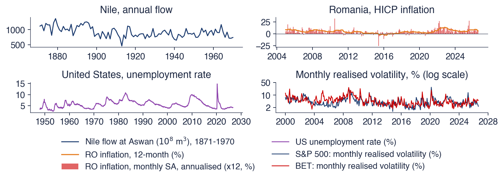

Academia de Studii Economice din București IDA Institute Digital Assets Blockchain Research Center AI4EFin Artificial Intelligence for Energy Finance Academia Română, Institutul de Prognoză Economică MSCA Digital Finance
Capitolul întreabă cît timp rămîne un șoc într-o serie. Modelele ARMA din Capitolul 2 răspund „nu mult”: autocorelațiile lor, și odată cu ele efectul unui șoc trecut, scad cu o rată exponențială. Modelele cu rădăcină unitară din Capitolul 3 răspund „pentru totdeauna”. Inundațiile Nilului, inflația, șomajul și volatilitatea randamentelor bursiere se comportă între aceste extreme: șocurile se sting, dar în ani sau decenii, nu în cîteva perioade.
Traseul are patru etape. Prima compară memoria scurtă și memoria lungă prin descreșterea exponențială și cea hiperbolică a funcției de autocorelație. A doua introduce diferența fracționară \((1-L)^d\) și modelul ARFIMA\((p,d,q)\) construit pe ea. A treia estimează \(d\) prin cinci metode (R/S, DFA, GPH, Whittle local și verosimilitate maximă) și folosește estimările pentru prognoză. A patra aplică aceste instrumente volatilității și arată apoi cum rupturile și schimbările de regim pot crea o memorie lungă doar aparentă. Capitolul se sprijină pe ACF și pe spectrul din Capitolul 1, pe rădăcinile unitare din Capitolul 3 și pe modelele GARCH din Capitolul 5.
Pe scurt
Întrebarea: cît timp rămîne un șoc într-o serie? Modelele ARMA (Capitolul 2) uită exponențial; unele serii uită mult mai lent
Primele rezultate sînt conceptuale. Cititorul trebuie să poată deosebi memoria scurtă de cea lungă în două moduri echivalente, după viteza cu care scade ACF și după comportamentul densității spectrale în apropierea frecvenței zero; să calculeze de mînă ponderile lui \((1-L)^d\) și primele autocorelații ale unui proces ARFIMA\((0,d,0)\); și să enunțe pentru ce valori ale lui \(d\) procesul este staționar și inversabil și cum se leagă \(d\) de exponentul Hurst \(H\).
Celelalte rezultate sînt empirice. Cititorul estimează \(d\) prin metode euristice, semiparametrice și parametrice și apreciază cît de incertă este fiecare estimare, în special cît depinde ea de numărul de frecvențe folosite. Cititorul face de asemenea prognoze cu ARFIMA, le compară out-of-sample cu repere ARMA bine specificate și recunoaște situațiile în care o estimare a lui \(d\) reflectă o ruptură structurală sau o schimbare de regim, nu o memorie lungă reală.
Pe scurt
Distingeți memoria scurtă de memoria lungă după descreșterea ACF și după spectrul din apropierea frecvenței zero
Calculați ponderile lui \((1-L)^d\) și autocorelațiile unui ARFIMA\((0,d,0)\)
Precizați intervalele de staționaritate și de inversabilitate ale lui \(d\) și legătura \(H = d + 1/2\)
Estimați \(d\) cu R/S, DFA, GPH, Whittle local și verosimilitate maximă și apreciați incertitudinea estimărilor
Faceți prognoze cu ARFIMA și comparați-le corect cu modele ARMA de referință
Recunoașteți memoria lungă aparentă, cauzată de rupturi și de schimbări de regim
Manualul cursului, Huang și Petukhina (2022), tratează modelele ARIMA și GARCH pe care se construiește acest capitol. Teoria proceselor cu memorie lungă se găsește în Brockwell și Davis (1991), secțiunea 13.2, iar pe larg în monografia lui Beran et al. (2013);Baillie (1996) face o sinteză a memoriei lungi și a integrării fracționare în econometrie. Graves et al. (2017) prezintă istoria domeniului, de la măsurătorile lui Hurst pe Nil la Mandelbrot și la modelul ARFIMA.
Toate calculele se fac în Python. Biblioteca standard statsmodels nu are o clasă ARFIMA, de aceea estimatorii capitolului (R/S, DFA, GPH, Whittle local și verosimilitatea maximă exactă) sînt scriși explicit în Quantlet-urile capitolului, ceea ce le face și logica vizibilă. Modelul FIGARCH provine din pachetul arch, folosit în Capitolul 5. Notebook-ul cursului rulează în Google Colab, iar cursul video de pe Quantinar acoperă același material.
estimatorii sînt scriși explicit în cod (R/S, DFA, GPH, Whittle local, ML exactă); statsmodels nu are o clasă ARFIMA; FIGARCH provine din pachetul arch
Capitolele 2 și 3 au descris două moduri în care o serie își poate aminti trecutul. Într-un model ARMA staționar, efectul unui șoc se stinge geometric, astfel încît după cîteva zeci de perioade practic a dispărut. Într-un mers aleator, cazul rădăcinii unitare, șocul rămîne în serie pentru totdeauna. Multe serii observate se află între aceste două extreme. Inundațiile anuale ale Nilului, inflația, șomajul și volatilitatea randamentelor bursiere au autocorelații moderate la primele laguri, care rămîn apoi pozitive pentru un număr foarte mare de laguri. Aceste serii uită, dar mult mai încet decît permite orice model ARMA de ordin mic.
Capitolul studiază această memorie lungă (long memory). Instrumentul central este diferența fracționară \((1-L)^d\), în care ordinul de diferențiere \(d\) poate fi orice număr real, nu doar 0 sau 1. Aplicată unui model ARMA, ea dă modelul ARFIMA\((p,d,q)\), introdus de Granger și Joyeux (1980) și Hosking (1981): un singur parametru \(d\) pentru partea lentă, pe termen lung, a memoriei și polinoamele ARMA cunoscute pentru primele laguri. Capitolul arată apoi cum se estimează \(d\), cum se fac prognoze cu un model ARFIMA, de ce volatilitatea randamentelor are memorie lungă, iar randamentele însele nu, și cum pot rupturile structurale (structural breaks) produce o memorie lungă care de fapt nu există.
Datele spun o poveste coerentă. Pentru inflația lunară din România, un model ARFIMA\((0,d,0)\) cu \(\hat d = 0{,}31\) este preferat celor mai bune modele ARMA atît după AIC, cît și după BIC. Pentru randamentele zilnice ale S&P 500, estimarea lui \(d\) este practic zero, dar pentru randamentele absolute, o măsură a volatilității, estimarea Whittle locală este 0,53. Iar pentru Nil, seria de la care a pornit domeniul, o singură schimbare a debitului mediu după 1898 explică aproape toată memoria aparentă a anilor 1871–1970.

Cele patru serii ale capitolului: debitul anual al Nilului la Assuan (1871–1970), inflația IAPC din România (rata la 12 luni și rata lunară ajustată sezonier și anualizată), rata șomajului din SUA (din 1948) și volatilitatea realizată lunară a indicilor S&P 500 și BET (din 2000, scală logaritmică).
Ce veți putea face
Deosebiți memoria scurtă de cea lungă după descreșterea ACF și după comportamentul spectrului în apropierea frecvenței zero.
Calculați ponderile lui \((1-L)^d\) și autocorelațiile unui proces ARFIMA\((0,d,0)\).
Enunțați intervalele de staționaritate și de inversabilitate ale lui \(d\) și legătura \(H = d + 1/2\) cu exponentul Hurst.
Estimați\(d\) cu R/S, DFA, GPH, Whittle local și verosimilitate maximă și apreciați incertitudinea fiecărei estimări.
Prognozați cu ARFIMA și comparați corect modelul cu reperele ARMA.
Recunoașteți memoria lungă aparentă, produsă de rupturi structurale și de schimbări de regim.
RezumatIdeile principale, formulele și întrebările de autoevaluare.
Memorie scurtă și memorie lungă
Memoria unei serii staționare este descrisă de funcția ei de autocorelație: cît de puternic este corelată valoarea de la momentul \(t\) cu valoarea de după \(k\) perioade. Secțiunea pornește de la măsurătorile lui Hurst pe Nil, privește patru serii persistente și precizează apoi diferența dintre memoria scurtă și memoria lungă. Memoria scurtă (short memory) înseamnă autocorelații care scad exponențial și au o sumă finită; memoria lungă înseamnă autocorelații care scad ca o putere a lagului și au o sumă infinită. Aceeași distincție apare în domeniul frecvențelor ca o densitate spectrală finită sau infinită la frecvența zero.
Harold Edwin Hurst a fost un hidrolog britanic care a petrecut peste 60 de ani în Egipt măsurînd Nilul, pentru a dimensiona rezervoarele barajelor de la Assuan. Întrebarea inginerească era cît de mare trebuie să fie un rezervor pentru ca el să poată elibera, în fiecare an, debitul mediu, fără să se reverse și fără să se golească vreodată. Răspunsul depinde de amplitudinea debitelor cumulate: pe \(n\) ani, rezervorul trebuie să absoarbă cel mai mare surplus acumulat peste medie și să acopere cel mai mare deficit acumulat sub medie. Diferența dintre cele două este amplitudinea (range).
Dacă debitele anuale ar fi independente, amplitudinea ar crește ca \(n^{0{,}5}\), viteza unui mers aleator. Hurst (1951) a constatat, pe Nil și pe multe alte înregistrări lungi, că amplitudinea crește ca \(n^H\), cu \(H \approx 0{,}7\). Diferența nu ține de zecimale: pe orizonturi lungi, un rezervor proiectat în ipoteza independenței este prea mic, deoarece anii ploioși vin grupați cu ani ploioși, iar cei secetoși cu ani secetoși, pe durata unor decenii. Mandelbrot și Wallis (1968) au numit acest fenomen „efectul Iosif” (Joseph effect), după cei șapte ani de belșug și cei șapte ani de foamete din povestirea biblică.
Exponentul lui Hurst a fost prima măsurare a memoriei lungi: o dependență care se stinge prea încet pentru a putea fi reprodusă de vreun model ARMA de ordin mic. Restul capitolului transformă constatarea lui empirică într-un model, procesul ARFIMA, și în estimatori ai parametrului de memorie.
Întrebare pentru sală Pe cîte luni consecutive, cel mult, rămîne șomajul din SUA de aceeași parte a mediei sale din 1948–2026?
Răspuns
106 luni, aproape nouă ani; Nilul rămîne 11 ani de aceeași parte a mediei, inflația anuală din România 103 luni. Pentru o serie fără memorie, șirurile lungi de acest fel ar fi foarte rare.
Graficul arată cele patru grupuri de serii folosite în tot capitolul. Primul este debitul anual al Nilului la Assuan, 1871–1970, în unități de \(10^8\) metri cubi, un set de date clasic disponibil în statsmodels. Al doilea este inflația din România măsurată prin indicele armonizat al prețurilor de consum (IAPC, HICP) de la Eurostat, prezentată de două ori: ca rată la 12 luni (linia) și ca rată lunară (barele). Rata lunară este ajustată sezonier (seasonally adjusted, SA) prin scăderea, din fiecare lună, a mediei lunii calendaristice respective, și anualizată prin înmulțire cu 12, pentru ca ambele măsuri să aibă aceeași scară.
Al treilea panou este rata șomajului din SUA, lunară din 1948, din baza FRED (Federal Reserve Economic Data). Al patrulea arată volatilitatea realizată lunară a indicelui S&P 500 și a indicelui BET al Bursei de Valori București, calculată din randamentele zilnice din 2000 și reprezentată pe scală logaritmică. Volatilitatea realizată este definită precis în secțiunea despre volatilitate; deocamdată este suficient să o citim ca volatilitatea observată în fiecare lună.
Cele patru panouri nu au nimic în comun ca unități sau ca surse. Ce le leagă se vede cu ochiul liber: fiecare serie petrece perioade lungi deasupra mediei și perioade lungi sub ea, în loc să traverseze media la fiecare cîteva perioade, cum ar face un zgomot alb.
Pe scurt
Debitul Nilului la Aswan, 1871–1970 (statsmodels); inflația IAPC din România, anuală și lunară, ajustată sezonier (SA) cu mediile lunare (Eurostat)
Rata șomajului din SUA (FRED UNRATE); volatilitatea realizată lunară a randamentelor zilnice S&P 500 și BET (EODHD)
Nilul are un debit mediu de 919 (în \(10^8\) m\(^3\)), dar istoria lui nu este o succesiune de ani independenți: după 1900 urmează o perioadă lungă de ani în majoritate secetoși. Inflația anuală din România a urcat pînă la un maxim de 13,6% în noiembrie 2022 și era încă 6,1% în august 2026, deci un șoc început în 2021–2022 se vede și după cîțiva ani. Șomajul din SUA are o asimetrie caracteristică: crește repede în recesiuni, pînă la un maxim de 14,8% în aprilie 2020, apoi scade încet, pe parcursul mai multor ani; ultima valoare este 4,2% (septembrie 2026).
Volatilitatea realizată alternează între ani liniștiți și ani agitați. Maximul ei lunar este 27% pentru S&P 500, în martie 2020, și 27% pentru BET, în octombrie 2008; acestea sînt volatilități ale unei singure luni, nu volatilități anualizate. Pe ambele piețe, o lună agitată este urmată de multe luni cu volatilitate ridicată: gruparea volatilității din Capitolul 5, dar întinsă pe ani, nu pe zile.
Pentru o asemenea persistență sînt posibile trei explicații, iar capitolul le păstrează pe toate trei în vedere. Seria poate avea o memorie care scade încet, dar constant (memorie lungă); poate fi apropiată de o rădăcină unitară, astfel încît șocurile sînt aproape permanente; sau poate trece prin regimuri cu medii diferite, astfel încît persistența provine din cîteva schimbări rare. Cele trei explicații au consecințe diferite pentru prognoză, iar instrumentele capitolului sînt construite pentru a le deosebi.
Pe scurt
Fiecare serie stă mult timp deasupra sau sub media ei
Nilul: media 919 (\(10^8\) m\(^3\)), perioade secetoase lungi după 1900; inflația anuală din România a atins 13,6% în noiembrie 2022 și era 6,1% în august 2026
Șomajul din SUA crește repede în recesiuni (maximum 14,8% în aprilie 2020) și scade lent; ultima valoare 4,2% (septembrie 2026)
volatilitatea realizată: anii calmi alternează cu anii agitați; maxime 27% (S&P 500, martie 2020) și 27% (BET, octombrie 2008)
Întrebarea capitolului: este aceasta o memorie care se stinge lent (lungă), o rădăcină aproape unitară sau o succesiune de regimuri?
Reamintim din Capitolul 1 că, pentru o serie staționară, autocovarianța la lagul \(k\) este \(\gamma(k)\), iar autocorelația este \(\rho(k) = \gamma(k)/\gamma(0)\). O serie are memorie scurtă atunci cînd autocorelațiile ei sînt absolut sumabile, \(\sum_{k=0}^{\infty}|\rho(k)| < \infty\). Intuitiv, cantitatea totală de dependență dintre o observație și toate observațiile viitoare este finită.
Orice proces ARMA staționar are memorie scurtă, și încă într-o formă puternică: autocorelațiile lui sînt mărginite de \(|\rho(k)| \le C r^k\), cu o constantă \(C > 0\) și o rată \(0 < r < 1\), deci scad exponențial. Pentru un AR(1), \(\rho(k) = \phi^k\) și \(r = |\phi|\). Chiar și un AR(1) persistent, cu \(\phi = 0{,}9\), are \(\rho(50) = 0{,}005\): după 50 de perioade, șocul este practic uitat. Rata exponențială explică de ce prognozele ARMA revin repede la medie.
Aceeași proprietate are o formă spectrală. Densitatea spectrală (spectral density) \(f(\lambda)\) descrie cum se distribuie varianța seriei pe frecvențele \(\lambda \in [0, \pi]\), măsurate în radiani pe perioadă; frecvenței \(\lambda\) îi corespunde un ciclu de \(2\pi/\lambda\) perioade, deci frecvențele apropiate de zero corespund unor cicluri foarte lente. La frecvența zero, \(f(0) = \frac{1}{2\pi}\sum_k \gamma(k)\), valoare finită în cazul memoriei scurte. Suma \(\sum_k \gamma(k)\) este varianța de lungă durată (long-run variance) și determină precizia mediei de selecție: pentru memoria scurtă, \(\mathrm{Var}(\bar x_T)\) scade ca \(1/T\), ca pentru date independente, doar cu o altă constantă.
Pe scurt
Reamintim (Capitolul 1): \(\rho(k) = \gamma(k)/\gamma(0)\), autocorelația la lagul \(k\) a unei serii staționare
O serie staționară are memorie lungă, sau dependență de lungă durată (long-range dependence), atunci cînd autocorelațiile ei scad ca o putere a lagului. Cele două definiții echivalente, în domeniul timpului și în domeniul frecvențelor, sînt
cu \(0 < d < 1/2\). Simbolul \(\sim\) înseamnă că raportul celor doi membri tinde la 1, \(C\) și \(G\) sînt constante pozitive, iar \(d\) este parametrul de memorie. Deoarece \(2d - 1\) se află între \(-1\) și 0, descreșterea este hiperbolică (hyperbolic decay): mult mai lentă decît orice descreștere exponențială și suficient de lentă pentru ca suma \(\sum_k \rho(k)\) să fie divergentă, la fel cum \(\sum_k k^{-0{,}5}\) este divergentă. Luate separat, autocorelațiile îndepărtate sînt mici, dar împreună contează.
În domeniul frecvențelor, (8.1) spune că densitatea spectrală are un pol la frecvența zero: crește nemărginit cînd \(\lambda\) se apropie de zero. Ciclurile lente, de toate lungimile, poartă o parte mare a varianței, de aceea o serie cu memorie lungă face excursii lungi departe de medie.
Consecința practică privește media de selecție. Cu memorie lungă, \(\mathrm{Var}(\bar x_T) \sim c\,T^{2d-1}\), cu o constantă \(c > 0\), care scade mai încet decît \(1/T\). Un interval de încredere pentru medie calculat ca și cum datele ar fi independente este deci prea îngust, iar eroarea crește cu volumul eșantionului. Parametrul \(d\) măsoară cît de încet se stinge trecutul: \(d\) apropiat de 0 înseamnă aproape memorie scurtă, iar \(d\) apropiat de 1/2 înseamnă o serie staționară extrem de persistentă.
Pe scurt
Memorie lungă (dependență pe termen lung): \(\rho(k) \sim C\,k^{2d-1}\) cînd \(k \to \infty\), cu \(0 < d < 1/2\)
o descreștere hiperbolică (de tip putere): exponentul \(2d - 1\) se află în \((-1, 0)\)
suma \(\sum_k \rho(k)\) diverge: observațiile îndepărtate contează încă, luate împreună
\(\sim\): raportul celor doi membri tinde la 1; \(C, G, c > 0\): constante; \(d\): parametrul de memorie
În domeniul frecvenței: \(f(\lambda) \sim G\,\lambda^{-2d}\) cînd \(\lambda \to 0\): un pol la frecvența zero
frecvențele joase (cicluri lente de toate lungimile) poartă cea mai mare parte a varianței
Consecință: \(\Var(\bar{x}_T) \sim c\,T^{2d-1}\) (\(\bar{x}_T\): media de selecție a \(T\) observații), mai lent decît \(1/T\)
intervalele de încredere care presupun independența sînt prea înguste; parametrul de memorie \(d\) măsoară cît de lent se estompează trecutul
Întrebare pentru sală Eliminați primele 50% din fiecare eșantion (inflația din SUA începe atunci în noiembrie 1986). Cîte dintre cele 48 de autocorelații ale inflației lunare din SUA rămîn peste bandă?
Răspuns
11 din 48, față de 48 din 48 pe 1947–2026; ρ̂(10) scade de la 0,38 la 0,16. O mare parte din memoria seriei complete vine din anii 1970 și de la începutul anilor 1980.
Graficul compară ACF de selecție a patru serii cu un reper simplu cu memorie scurtă. Barele sînt autocorelațiile de selecție ale debitului Nilului (pînă la lagul 30), ale inflației lunare din România, ajustate sezonier, ale inflației lunare din SUA, anualizate, și ale logaritmului volatilității realizate lunare a S&P 500 (fiecare pînă la lagul 48). Linia punctată este \(\hat\rho(1)^k\), ACF a unui AR(1) cu aceeași primă autocorelație ca datele. Banda colorată \(\pm 1{,}96/\sqrt T\) este banda aproximativă de 95% pentru autocorelațiile unui zgomot alb.
Comparația este simplă în mod intenționat. AR(1) este potrivit pe primul lag, deci orice diferență dintre bare și linia punctată la laguri mai mari arată cu cît mai multă memorie au datele decît ar da o descreștere exponențială. O bară în afara benzii este, luată separat, semnificativ diferită de zero la 5%; cu 30 sau 48 de laguri, una sau două bare în afara benzii sînt de așteptat din întîmplare chiar și pentru un zgomot alb.
Pe scurt
Bare: ACF de selecție; linia punctată: \(\hat\rho(1)^k\), ACF a unui AR(1) cu aceeași autocorelație de ordinul 1; zona colorată: \(\pm 1{,}96/\sqrt{T}\)
Pentru Nil, prima autocorelație de selecție este \(\hat\rho(1) = 0{,}50\). Un AR(1) cu acest coeficient ar avea \(\rho(10) = 0{,}0009\), dar autocorelația de selecție la lagul 10 este 0,09, de o sută de ori mai mare, iar 11 din primele 30 de autocorelații se află deasupra benzii zgomotului alb. Pentru inflația lunară din România, \(\hat\rho(1) = 0{,}44\) și \(\hat\rho(10) = 0{,}20\), iar 22 din 48 de laguri sînt deasupra benzii. Inflația lunară din SUA este cazul extrem: toate cele 48 de autocorelații sînt deasupra benzii. Logaritmul volatilității realizate a S&P 500 are 15 laguri din 48 deasupra benzii; dincolo de lagul 30, autocorelațiile lui devin ușor negative, o deplasare în jos a ACF de selecție a seriilor persistente discutată mai tîrziu în capitol.
Tiparul comun celor patru panouri este o primă autocorelație moderată urmată de o coadă lungă, care scade încet. Un AR(1) nu îl poate produce: dacă coeficientul lui este ales pentru a potrivi primul lag, coada se stinge mult prea repede; dacă este ales suficient de mare pentru a produce coada, primul lag iese mult prea mare. Această combinație este semnătura empirică a memoriei lungi, iar modelul ARFIMA din secțiunea 3 o reproduce cu un singur parametru.
Pe scurt
Nilul: \(\hat\rho(1) = 0{,}50\); un AR(1) ar da \(\rho(10) = 0{,}0009\), datele dau 0,09
11 dintre primele 30 de autocorelații sînt deasupra benzii zgomotului alb
Inflația lunară din România: \(\hat\rho(1) = 0{,}44\), \(\hat\rho(10) = 0{,}20\); 22 din 48 de laguri deasupra benzii
inflația lunară din SUA: 48 din 48; logaritmul volatilității realizate S&P 500: 15 din 48
O primă autocorelație moderată, urmată de o coadă lungă care scade lent, este semnătura memoriei lungi; un AR(1) nu o poate produce
Descreștere hiperbolică și descreștere exponențială
Întrebare pentru sală Fixați d = 0,1. De cîte ori este suma primelor 1000 de autocorelații ARFIMA mai mare decît suma completă a AR(1)?
Răspuns
De 14 ori: 1,74 față de 0,125. Chiar o memorie lungă slabă acumulează mult peste o memorie scurtă cu același ρ(1).
Întrebare pentru sală Fixați d = 0,2. Cît este ρ(10) pentru ARFIMA(0; 0,2; 0) și pentru AR(1) cu același ρ(1) = 0,25?
Răspuns
0,064 față de 9,5 · 10⁻⁷. Cu d mic, coada hiperbolică este joasă, dar tot cu cinci ordine de mărime peste cea exponențială.
Graficul trece de la date la teorie. El arată ACF teoretică a unui proces ARFIMA\((0,d,0)\) cu \(d = 0{,}4\), modelul cu memorie lungă definit în secțiunile următoare, împreună cu ACF a unui AR(1) ales astfel încît să aibă aceeași primă autocorelație, \(\rho(1) = d/(1-d) = 0{,}667\). Panoul din stînga folosește axe obișnuite și laguri pînă la 50; panoul din dreapta folosește scale logaritmice pe ambele axe și laguri pînă la 1000.
Pe axe obișnuite, cele două curbe pornesc din același punct și se despart repede: AR(1) scade aproape la zero în 10 laguri, iar curba ARFIMA se aplatizează și rămîne peste 0,3. Pe axe log–log, diferența devine o diferență de formă. Logaritmul lui \(\rho(k) \sim Ck^{2d-1}\) este \(\log\rho(k) \approx \log C + (2d-1)\log k\), o dreaptă în \(\log k\); logaritmul lui \(\phi^k\) este \(k\log\phi\), liniar în \(k\), nu în \(\log k\), și de aceea se curbează în jos pe un grafic log–log.
Pe scurt
ACF teoretică a unui ARFIMA\((0,d,0)\) cu \(d = 0{,}4\) (secțiunile următoare) și a unui AR(1) cu același \(\rho(1) = d/(1-d) = 0{,}667\); dreapta: ambele pe axe log–log, cu legea de putere \(C k^{2d-1}\)
Cele două procese au aceeași primă autocorelație, dar cozi foarte diferite. La lagul 10, autocorelația ARFIMA este 0,424, iar cea a AR(1) este 0,017; la lagul 50, valorile sînt 0,307 și \(1{,}6 \cdot 10^{-9}\). ACF cu memorie lungă este încă 0,169 la lagul 1000, unde AR(1) a devenit de mult imposibil de deosebit de zero.
Pe graficul log–log, ACF hiperbolică este o dreaptă cu panta \(2d - 1 = -0{,}2\). Această observație stă la baza tuturor estimatorilor din secțiunea 4: memoria lungă devine o dreaptă pe un grafic log–log, iar \(d\) se citește din panta ei. Metodele R/S și DFA privesc panta unui grafic log–log al variabilității față de mărimea blocului, iar metoda GPH panta log-periodogramei față de logaritmul frecvenței.
Sumele autocorelațiilor arată de ce memoria lungă se numește nesumabilă. Pentru AR(1), \(\sum_{k \ge 1}\phi^k = \phi/(1-\phi) = 2{,}0\). Pentru procesul ARFIMA, suma este 33,0 pînă la lagul 100 și 210,4 pînă la lagul 1000 și continuă să crească nelimitat pe măsură ce se adaugă laguri.
Pe scurt
Același început, cozi diferite: la lagul 10, 0,424 față de 0,017; la lagul 50, 0,307 față de \(1{,}6 \cdot 10^{-9}\)
ACF cu memorie lungă este încă 0,169 la lagul 1000
Pe axe log–log ACF hiperbolică devine o dreaptă de pantă \(2d - 1 = -0{,}2\); ACF exponențială se curbează în jos
panta unui grafic log–log este ideea din spatele tuturor estimatorilor din acest capitol
Sumele autocorelațiilor: AR(1) \(\sum_{k\ge1}\phi^k = 2{,}0\); ARFIMA: 33,0 pînă la lagul 100 și 210,4 pînă la lagul 1000, în creștere
Memoria scurtă, tipică proceselor ARMA, înseamnă autocorelații sumabile, care scad exponențial, și o densitate spectrală finită la frecvența zero. Memoria lungă înseamnă \(\rho(k) \sim Ck^{2d-1}\), o ACF nesumabilă și un pol spectral \(f(\lambda) \sim G\lambda^{-2d}\). Hurst a constatat pe Nil că amplitudinile cresc ca \(n^H\), cu \(H > 1/2\), iar inflația și volatilitatea au aceleași cozi lungi ale autocorelațiilor, care scad încet.
Pe scurt
Memorie scurtă: ACF sumabilă, descreștere exponențială, spectru finit la zero (ARMA)
Hurst și Nilul: amplitudinile cresc ca \(n^H\), cu \(H > 1/2\)
Inflația și volatilitatea au cozi lungi ale ACF, care scad lent
Sinteza secțiunii
Memoria lungă este o afirmație despre coada funcției de autocorelație: autocorelațiile scad ca o putere a lagului, suficient de încet pentru ca suma lor să fie infinită, iar densitatea spectrală are un pol la frecvența zero. Nilul, inflația și volatilitatea combină o primă autocorelație moderată cu o coadă lungă pe care niciun AR(1) nu o poate reproduce. Pe un grafic log–log, o lege de putere este o dreaptă, iar panta ei, \(2d - 1\), este mărimea pe care o vor măsura estimatorii capitolului.
Diferențierea fracționară
Un model ARIMA diferențiază o serie de un număr întreg de ori: \(d = 0\) păstrează nivelul, \(d = 1\) ia primele diferențe. Seriile cu memorie lungă au nevoie de ceva intermediar. Secțiunea definește diferența fracționară \((1-L)^d\) pentru orice \(d\) real, îi calculează ponderile, prezintă operația inversă, integrarea fracționară (fractional integration), și o aplică prețului S&P 500 pentru a găsi cel mai mic grad de diferențiere care face un preț staționar.
Operatorul de întîrziere (lag operator) mută o serie cu o perioadă, \(Lx_t = x_{t-1}\), iar prima diferență din Capitolul 3 este \((1-L)x_t = x_t - x_{t-1}\). Puterile lui \((1-L)\) se obțin prin desfacerea parantezelor: \(d = 0\) lasă nivelul neschimbat, \(d = 1\) dă prima diferență, iar \(d = 2\) dă \((1-L)^2x_t = x_t - 2x_{t-1} + x_{t-2}\). Pentru \(d\) întreg, dezvoltarea se oprește după \(d + 1\) termeni.
Pentru \(d\) real, seria binomială extinde definiția și dă diferențierea fracționară (fractional differencing):
Aici \(\binom{d}{k} = d(d-1)\cdots(d-k+1)/k!\) este coeficientul binomial pentru \(d\) real, iar \(\pi_k\) este ponderea lui \(x_{t-k}\). Scris pe larg, \((1-L)^d = 1 - dL - \frac{d(1-d)}{2!}L^2 - \frac{d(1-d)(2-d)}{3!}L^3 - \dots\). Recurența din (8.2) este modul practic de calcul al ponderilor: fiecare pondere este cea anterioară înmulțită cu \((k-1-d)/k\).
Pentru \(d\) întreg, factorul \((k-1-d)\) devine la un moment dat zero și seria se oprește. Pentru \(d\) neîntreg, acest lucru nu se întîmplă niciodată, deci o diferență fracționară folosește toate valorile trecute ale seriei. Pentru \(k\) mare, ponderile se comportă ca \(\pi_k \approx -\frac{d}{\Gamma(1-d)}\,k^{-1-d}\), unde \(\Gamma(\cdot)\) este funcția gamma, care extinde factorialul la numere reale, cu \(\Gamma(n) = (n-1)!\) pentru numere întregi. Ponderile scad deci hiperbolic. O diferență fracționară elimină o parte din memoria seriei, dar nu toată.
Pe scurt
Operatorul de lag: \(Lx_t = x_{t-1}\); prima diferență \((1-L)x_t = x_t - x_{t-1}\) (Capitolul 3)
Toate ponderile de după prima sînt negative și scad încet în valoare absolută. Suma lor pe toate lagurile este \((1-1)^{0{,}4} = 0\), obținută punînd \(L = 1\) în \((1-L)^{0{,}4}\). Un nivel constant \(x_t = c\) este deci eliminat complet, exact ca la prima diferență, dar constanta este scăzută printr-o medie ponderată lungă a trecutului, nu doar prin valoarea anterioară.
Comparația cu alte valori ale lui \(d\) arată rolul parametrului. Pentru \(d = 1\),\(\pi_1 = -1\), iar toate celelalte ponderi sînt zero: contează doar valoarea anterioară. Pentru \(d = 0{,}7\),\(\pi_1 = -0{,}70\) și \(\pi_2 = -0{,}105\): prima pondere este mai aproape de \(-1\), iar următoarele sînt mai mici. Pe măsură ce \(d\) crește de la 0 la 1, ponderea se mută din trecutul îndepărtat spre observația cea mai recentă.
Întrebare pentru sală Fixați d = 1,5. Cît sînt π₁ și π₂ și ce semn are π₂?
Răspuns
π₁ = −1,5 și π₂ = −1,5 · (1 − 1,5)/2 = +0,375. Pentru d > 1 factorul (k − 1 − d) este negativ la k = 2, deci ponderile își schimbă semnul după primul lag.
Întrebare pentru sală Duceți curba albastră la d = 0,9. Ce parte dintr-un șoc unitar mai rămîne după 100 de perioade?
Răspuns
ψ₁₀₀ = 0,59 (0,74 după 10 perioade), față de 0,9¹⁰⁰ = 2,7 · 10⁻⁵ pentru AR(1) cu φ = 0,9. Seria revine la medie, dar foarte încet.
Panoul din stînga arată ponderile \(\pi_k\) ale lui \((1-L)^d\) pentru primele zece laguri și patru valori ale lui \(d\): 0,2, 0,4, 0,7 și 1. Pentru \(d = 1\) există o singură bară, la lagul 1, de înălțime \(-1\). Pentru valorile fracționare, prima pondere este egală cu \(-d\), iar următoarele sînt numere negative mici, care scad încet; cu cît \(d\) este mai mare, cu atît prima pondere este mai mare în valoare absolută.
Panoul din dreapta arată operația inversă. Integrarea fracționară, \((1-L)^{-d}\), transformă un zgomot alb într-o serie cu memorie lungă, iar coeficienții ei \(\psi_k\) sînt răspunsurile la impuls (impulse responses): efectul, după \(k\) perioade, al unui șoc unitar. Axa orizontală este logaritmică, de la 1 la 200 de perioade. Răspunsurile seriei integrate fracționar sînt comparate cu cele ale unui AR(1) cu \(\phi = 0{,}9\), linia punctată, și cu mersul aleator, \(d = 1\), pentru care răspunsul rămîne egal cu 1.
Pe scurt
Stînga: ponderile \(\pi_k\) ale lui \((1-L)^d\); dreapta: răspunsurile la impuls \(\psi_k\) ale lui \((1-L)^{-d}\), adică efectul după \(k\) perioade al unui șoc unitar asupra unei serii integrate fracționar, comparate cu un AR(1) cu \(\phi = 0{,}9\)
cu \(\psi_0 = 1\) și, pentru \(k\) mare, \(\psi_k \approx k^{d-1}/\Gamma(d)\). Răspunsurile la impuls scad ca o putere a orizontului. După 100 de perioade, un șoc unitar mai are o pondere de 0,028 cînd \(d = 0{,}4\) și de 0,193 cînd \(d = 0{,}7\); AR(1) cu \(\phi = 0{,}9\) păstrează doar \(0{,}9^{100} = 2{,}7 \cdot 10^{-5}\).
Graficul arată că acest lucru nu este adevărat la orice orizont. La început, AR(1) își amintește mai mult: la lagul 10, răspunsul lui este 0,349, față de 0,112 pentru \(d = 0{,}4\). Mai tîrziu uită mult mai repede, iar curbele se intersectează. Memoria exponențială este puternică și scurtă, memoria hiperbolică este slabă și lungă. Pentru \(d = 1\), mersul aleator, \(\psi_k = 1\) la orice orizont, iar șocul nu se stinge niciodată.
Pentru orice \(0 < d < 1\), răspunsurile tind la zero, deci efectul oricărui șoc dispare în cele din urmă: seria revine la medie (mean-reverting). Proprietatea rămîne valabilă chiar și cînd seria este nestaționară, pentru \(0{,}5 \le d < 1\). Integrarea fracționară separă astfel două proprietăți care coincid pentru \(d\) întreg: o serie poate avea, la limită, o varianță infinită, deci poate fi nestaționară, și totuși să revină la medie după fiecare șoc.
Întrebare pentru sală Alegeți pragul 10⁻³ (fereastră mai scurtă). De la ce d trece statistica ADF de valoarea critică de 5% și cu cîte ponderi?
Răspuns
De la d = 0,35, cu 61 de ponderi, față de 0,25 cu 445. Ponderile trunchiate nu mai au suma 0, deci filtrul păstrează o parte din nivel și trebuie un d mai mare pentru staționaritate.
Graficul aplică diferențierea fracționară logaritmului indicelui zilnic S&P 500, 6715 zile din 2000. Pentru fiecare \(d\) de la 0 la 1, cu pasul 0,05, seria \((1-L)^d\log P_t\) este calculată cu o fereastră fixă: ponderile sînt trunchiate acolo unde scad sub \(10^{-4}\) în valoare absolută, astfel încît fiecare observație este calculată cu același număr de valori trecute.
Două mărimi sînt reprezentate în funcție de \(d\). Panoul din stînga dă statistica testului Dickey–Fuller augmentat (augmented Dickey–Fuller, ADF) din Capitolul 3, a cărui ipoteză nulă este o rădăcină unitară; linia orizontală punctată este valoarea critică de 5%, \(-2{,}86\), iar valorile de sub ea resping rădăcina unitară. Panoul din dreapta dă corelația dintre seria diferențiată și nivelul logaritmic inițial. Prima mărime arată cît de staționară pare seria transformată, a doua cîtă informație despre nivel păstrează.
Pe scurt
Logaritmul S&P 500, zilnic, 6 715 de zile din 2000; \((1-L)^d\) cu fereastră fixă (ponderile sub \(10^{-4}\) sînt eliminate), \(d = 0;\ 0{,}05;\ \dots;\ 1\); stînga: statistica ADF (Capitolul 3); dreapta: corelația cu nivelul logaritmic
La cele două capete ale graficului se află cazurile cunoscute. Nivelul logaritmic, \(d = 0\), are o statistică ADF de 0,84, departe de valoarea critică, compatibilă cu o rădăcină unitară. Randamentul zilnic, \(d = 1\), are o statistică ADF de \(-61{,}6\) și respinge rădăcina unitară la foarte mare distanță, dar corelația lui cu nivelul logaritmic este doar 0,03. Prima diferență obține staționaritatea renunțînd la aproape toată informația despre locul în care se află prețul.
Între capete, statistica ADF trece de valoarea critică de 5% deja la \(d = 0{,}25\). În acel punct, corelația cu nivelul logaritmic este încă 0,984, iar fereastra fixă folosește 445 de ponderi. O serie diferențiată de ordinul 0,25 respinge rădăcina unitară la 5% și rămîne aproape perfect corelată cu prețul.
Aceasta este ideea din spatele folosirii diferențierii fracționare în învățarea automată pentru finanțe, temă reluată în Capitolul 9. Multe metode de învățare au nevoie de variabile de intrare staționare, iar primele diferențe le fac staționare cu prețul ștergerii nivelului. Cel mai mic \(d\) care trece un test de rădăcină unitară dă o variabilă staționară în sensul testului, care păstrează totuși cea mai mare parte a memoriei seriei inițiale.
Pe scurt
Nivelul logaritmic (\(d = 0\)) are rădăcină unitară (ADF 0,84); randamentul (\(d = 1\)) este staționar (ADF \(-\)61,6), dar are corelația 0,03 cu nivelul
prima diferență elimină toată informația despre nivel
Statistica ADF trece de valoarea critică de 5% (\(-\)2,86) deja la \(d = 0{,}25\), unde corelația cu nivelul este încă 0,984
fereastra fixă are atunci 445 de ponderi
O diferență fracționară poate face o serie staționară păstrîndu-i cea mai mare parte a memoriei: un instrument folosit pentru variabilele explicative din machine learning (Capitolul 9)
Diferența fracționară \((1-L)^d = \sum_k \pi_k L^k\) are ponderi date de recurența \(\pi_k = \pi_{k-1}(k-1-d)/k\), care scad hiperbolic. Inversa ei, \((1-L)^{-d}\), are răspunsurile la impuls \(\psi_k \approx k^{d-1}/\Gamma(d)\), iar șocurile se sting, deci seria revine la medie, ori de cîte ori \(d < 1\). Valorile lui \(d\) între 0 și 1 umplu golul dintre niveluri și primele diferențe.
\((1-L)^{-d}\): răspunsuri la impuls \(\psi_k \approx k^{d-1}/\Gamma(d)\); revenire la medie pentru \(d < 1\)
\(d\) între 0 și 1 umple golul dintre niveluri și primele diferențe
Sinteza secțiunii
Diferența fracționară generalizează prima diferență la orice ordin real. Ponderile ei ajung în tot trecutul și scad ca o putere a lagului, iar inversa ei produce răspunsuri la impuls care se sting încet, dar sigur, ori de cîte ori \(d < 1\). Pentru S&P 500, o diferență fracționară de ordinul 0,25 respinge deja rădăcina unitară la 5% și păstrează o corelație de 0,984 cu logaritmul prețului, în timp ce prima diferență nu păstrează aproape nimic.
Modelul ARFIMA\((p,d,q)\)
Combinînd diferența fracționară cu polinoamele ARMA din Capitolul 2 se obține modelul ARFIMA, modelul parametric standard pentru memoria lungă. Secțiunea îl definește, explică ce implică fiecare interval al lui \(d\), deduce autocorelațiile cazului cel mai simplu, ARFIMA\((0,d,0)\), simulează două traiectorii și leagă modelul de mișcarea browniană fracționară a lui Mandelbrot și de exponentul Hurst.
unde \(\varepsilon_t\) este un zgomot alb cu varianța \(\sigma^2\),\(\mu\) este media lui \(x_t\), iar \(\phi(L) = 1 - \phi_1L - \dots - \phi_pL^p\) și \(\theta(L) = 1 + \theta_1L + \dots + \theta_qL^q\) sînt polinoamele autoregresiv și de medie mobilă din Capitolul 2, cu toate rădăcinile în afara cercului unitate. Altfel spus: după ce seria este diferențiată fracționar, ceea ce rămîne este un proces ARMA staționar.
Modelul dă celor două părți ale lui două sarcini diferite. Parametrul \(d\) guvernează termenul lung, coada hiperbolică a ACF la laguri mari. Polinoamele \(\phi(L)\) și \(\theta(L)\) guvernează termenul scurt, primele autocorelații, al căror efect se stinge exponențial. Această împărțire face modelul util: un model ARMA singur trebuie să-și forțeze parametrii pentru a imita o coadă lentă, în timp ce ARFIMA descrie coada prin \(d\) și lasă partea ARMA liberă pentru dinamica pe termen scurt.
Modelele cunoscute sînt cazuri particulare. Cu \(d = 0\),(8.4) este un model ARMA\((p,q)\); cu \(d = 1\), este un model ARIMA\((p,1,q)\) din Capitolul 3. Pentru valori ale lui \(d\) între ele, seria este integrată fracționar de ordinul \(d\), ceea ce se scrie \(x_t \sim I(d)\).
Diferențierea fracționară a fost introdusă independent de Granger și Joyeux (1980) și de Hosking (1981). Granger și Joyeux au motivat modelul prin agregare: însumarea multor serii AR(1) cu grade diferite de persistență, de exemplu producția națională ca sumă a producției multor firme, dă o serie cu memorie lungă, deși fiecare componentă are memorie scurtă. Hosking a dedus funcția de autocorelație a procesului integrat fracționar, condițiile de staționaritate și de inversabilitate și a definit familia ARFIMA\((p,d,q)\).
Modelul lor a legat două tradiții care se dezvoltaseră separat. Hidrologii aveau exponentul lui Hurst și procesele fracționare ale lui Mandelbrot, iar econometricienii aveau modelele ARIMA ale lui Box și Jenkins. ARFIMA așază fenomenul lui Hurst în cadrul Box–Jenkins, cu un parametru care poate fi estimat și testat ca oricare altul.
Au urmat aplicații în multe domenii ale economiei: inflația, studiată pe mai multe țări de Hassler și Wolters (1995), producția, ratele dobînzii și, prin Ding, Granger și Engle (1993), volatilitatea randamentelor financiare. Clive Granger, din fotografie, a primit în 2003 Premiul Nobel pentru economie, împreună cu Robert Engle.
Tabelul arată ce implică valoarea lui \(d\). Pentru \(d \le -0{,}5\), procesul nu este inversabil: nu are o formă AR(\(\infty\)), deci nu poate fi scris ca funcție de propriul trecut, ceea ce cere prognoza. Pentru \(-0{,}5 < d < 0\), procesul este staționar, inversabil și antipersistent (anti-persistent): autocorelațiile lui sînt negative, iar suma lor pe toate lagurile pozitive este exact \(-1/2\). Pentru \(d = 0\), modelul este un ARMA cu memorie scurtă și descreștere exponențială. Pentru \(0 < d < 0{,}5\), este staționar cu memorie lungă, iar autocorelațiile lui scad hiperbolic și nu sînt sumabile.
Ultimele două rînduri sînt nestaționare. Pentru \(0{,}5 \le d < 1\), varianța procesului crește nemărginit, dar șocurile se sting, încet: seria revine la medie. Pentru \(d = 1\), modelul are o rădăcină unitară, iar șocurile sînt permanente. Hosking (1981) a stabilit cele două frontiere: staționaritatea cere \(d < 1/2\), iar inversabilitatea cere \(d > -1/2\). O serie nestaționară cu \(d < 1{,}5\) se tratează printr-o singură diferențiere, deoarece \((1-L)x_t \sim I(d-1)\), iar \(d - 1\) este atunci sub 1/2.
Exponentul Hurst al incrementelor staționare este \(H = d + 1/2\). Valorile \(H > 1/2\) înseamnă persistență, \(H < 1/2\) antipersistență, iar \(H = 1/2\) absența memoriei. Relația permite trecerea între estimatorii care raportează \(H\) (R/S și DFA) și cei care raportează \(d\).
Pe scurt
Intervalul lui \(d\)
Proprietăți
ACF / șocuri
\(d \le -0{,}5\)
neinversabil (fără formă AR(\(\infty\)))
–
\(-0{,}5 < d < 0\)
staționar, inversabil, antipersistent
negativă, cu suma \(-1/2\)
\(d = 0\)
ARMA, memorie scurtă
descreștere exponențială
\(0 < d < 0{,}5\)
staționar, memorie lungă
hiperbolică, nesumabilă
\(0{,}5 \le d < 1\)
nestaționar, cu revenire la medie
șocurile se sting, lent
\(d = 1\)
rădăcină unitară, ARIMA
șocurile sînt permanente
Staționaritatea cere \(d < 1/2\), inversabilitatea cere \(d > -1/2\) (Hosking (1981)); o serie nestaționară cu \(d < 1{,}5\) se tratează diferențiind o dată: \((1-L)x_t \sim I(d-1)\)
Exponentul Hurst al incrementelor staționare: \(H = d + 1/2\); \(H > 1/2\) persistență, \(H < 1/2\) antipersistență
Pentru zgomotul fracționar pur \(x_t = (1-L)^{-d}\varepsilon_t\), cu \(-1/2 < d < 1/2\),Hosking (1981) a obținut forme închise. Varianța este \(\gamma(0) = \sigma^2\,\Gamma(1-2d)/\Gamma(1-d)^2\), iar autocorelațiile satisfac
Recurența este forma practică. Ea pornește de la \(\rho(0) = 1\) și dă \(\rho(1) = d/(1-d)\) și \(\rho(2) = d(1+d)/[(1-d)(2-d)]\).
Pentru \(k\) mare, raportul funcțiilor gamma se comportă ca o putere, iar \(\rho(k) \approx \frac{\Gamma(1-d)}{\Gamma(d)}\,k^{2d-1}\). Aceasta este exact legea de putere din (8.1), cu constanta \(C = \Gamma(1-d)/\Gamma(d)\). Pentru \(d > 0\), toate autocorelațiile sînt pozitive și scad hiperbolic; pentru \(d < 0\), toate sînt negative.
Densitatea spectrală rezultă din funcția de transfer a lui \((1-L)^{-d}\):\(f(\lambda) = \frac{\sigma^2}{2\pi}|1 - e^{-i\lambda}|^{-2d} = \frac{\sigma^2}{2\pi}\bigl(2\sin(\lambda/2)\bigr)^{-2d}\), unde \(i\) este unitatea imaginară. În apropierea lui zero, \(2\sin(\lambda/2) \approx \lambda\), deci \(f(\lambda) \approx \frac{\sigma^2}{2\pi}\lambda^{-2d}\): polul spectral din (8.1), cu \(G = \sigma^2/(2\pi)\). Această formă exactă a spectrului este folosită de estimatorii GPH și Whittle din secțiunea 4.
Pe scurt
Pentru \(x_t = (1-L)^{-d}\varepsilon_t\), \(-1/2 < d < 1/2\) (Hosking (1981)):
Cu \(d = 0{,}3\), recurența din (8.5) dă \(\rho(1) = 0{,}3/0{,}7 = 0{,}429\),\(\rho(2) = 0{,}429 \cdot 1{,}3/1{,}7 = 0{,}328\) și \(\rho(3) = 0{,}328 \cdot 2{,}3/2{,}7 = 0{,}279\). Continuînd la fel, \(\rho(5) = 0{,}228\) și \(\rho(10) = 0{,}173\). Autocorelațiile scad repede la început și apoi foarte încet.
Varianța pentru \(\sigma^2 = 1\) este \(\Gamma(0{,}4)/\Gamma(0{,}7)^2 = 1{,}316\), mai mare decît varianța șocurilor. Diferența măsoară cît se acumulează memoria: fiecare observație conține nu doar șocul curent, ci și o sumă, care scade încet, a tuturor șocurilor trecute.
Comparația cu un AR(1) este din nou izbitoare. Un AR(1) cu același \(\rho(1) = 0{,}429\) are \(\rho(10) = 0{,}429^{10} = 0{,}0002\), cu trei ordine de mărime sub valoarea 0,173 a procesului ARFIMA. Exponentul Hurst al acestui proces este \(H = d + 0{,}5 = 0{,}8\), ceea ce descrie o serie puternic persistentă.
Întrebare pentru sală Fixați d = 0,45. Cît sînt ρ(1) și ρ(10)?
Răspuns
ρ(1) = 0,818 și ρ(10) = 0,652; AR(1) cu același ρ(1) are ρ(10) = 0,134. Varianța crește la 3,64.
Întrebare pentru sală Fixați d = 0,45. Cît este varianța teoretică a seriei (σ² = 1)?
Răspuns
Γ(0,1)/Γ(0,55)² = 3,64. Varianța traiectoriei de 1000 de observații este doar 2,31: media eșantionului absoarbe o parte din componenta lentă.
Graficul arată două procese ARFIMA\((0,d,0)\) simulate, generate de șocuri Normale standard, \(\varepsilon_t \sim N(0,1)\):\(d = 0{,}4\) sus și \(d = -0{,}4\) jos. Fiecare traiectorie are 1000 de observații și este simulată exact prin scufundare circulantă (circulant embedding), o metodă care generează, prin transformata Fourier rapidă, o serie gaussiană cu o funcție de autocovarianță dată.
Panourile din dreapta compară ACF de selecție, calculată dintr-o simulare mai lungă, de 20 000 de observații, cu ACF teoretică din (8.5). Pentru \(d = 0{,}4\), curba teoretică pornește de la 0,667 și scade încet; barele de selecție îi urmează forma, dar se află puțin sub ea. Pentru \(d = -0{,}4\), prima autocorelație este puternic negativă, iar următoarele sînt apropiate de zero.
Pe scurt
Traiectorii simulate (1000 de observații, simulare exactă prin scufundare circulantă) cu \(\varepsilon_t \sim N(0, 1)\); dreapta: ACF de selecție pentru 20 000 de observații și ACF teoretică
Traiectoria cu \(d = 0{,}4\) face excursii lungi deasupra și sub zero, de cîte cîteva sute de observații. ACF ei este cea hiperbolică din secțiunea 1, iar varianța ei teoretică este 2,07, de aproximativ două ori varianța șocurilor. Traiectoria pare să aibă trenduri, deși media procesului este constantă și egală cu zero. Acesta este unul dintre motivele pentru care memoria lungă este ușor confundată cu nestaționaritatea și pentru care un test de rădăcină unitară poate avea dificultăți cu asemenea serii. ACF de selecție se află sub cea teoretică deoarece media de selecție absoarbe o parte din excursiile lente, o deplasare în jos tipică seriilor cu memorie lungă.
Traiectoria cu \(d = -0{,}4\) face un zigzag rapid în jurul lui zero. Autocorelațiile ei sînt \(\rho(1) = -0{,}286\) și \(\rho(2) = -0{,}071\), iar varianța este 1,18. Aceasta este antipersistența: o creștere tinde să fie urmată de o scădere. Antipersistența este tipică seriilor diferențiate excesiv. Dacă o serie cu \(d = 0{,}6\) este diferențiată o dată, rezultatul are \(d = 0{,}6 - 1 = -0{,}4\), iar autocorelațiile negative arată că prima diferență a eliminat mai multă memorie decît avea seria.
Pe scurt
\(d = 0{,}4\): excursii lungi deasupra și sub zero; ACF hiperbolică din secțiunea 1; varianța 2,07
traiectoria pare să aibă trenduri, deși media este constantă: un motiv pentru care memoria lungă este confundată cu nestaționaritatea
Mandelbrot și Van Ness (1968) au definit mișcarea browniană fracționară (fractional Brownian motion) \(B_H(t)\), pentru \(0 < H < 1\): un proces gaussian în timp continuu, cu \(B_H(0) = 0\) și \(\mathrm{Var}(B_H(t)) = t^{2H}\). Proprietatea ei esențială este autosimilaritatea (self-similarity): \(B_H(ct)\) are aceeași distribuție ca \(c^H B_H(t)\) pentru orice \(c > 0\), deci o porțiune a traiectoriei, mărită în timp de \(c\) ori și în înălțime de \(c^H\) ori, arată statistic la fel ca întregul. Pentru \(H = 1/2\) se obține mișcarea browniană obișnuită, mersul aleator în timp continuu.
Incrementele mișcării browniene fracționare pe intervale de lungime 1 formează zgomotul gaussian fracționar (fractional Gaussian noise, fGn), o serie staționară cu autocorelațiile
Pentru \(k\) mare, \(\rho(k) \approx H(2H-1)k^{2H-2}\). Exponentul \(2H - 2\) este egal cu \(2d - 1\) cînd \(d = H - 1/2\), deci fGn are aceeași coadă hiperbolică precum un proces ARFIMA cu acest \(d\).
Mandelbrot a adus constatarea empirică a lui Hurst în teoria probabilităților și în statistică. Zgomotul gaussian fracționar este ruda în timp continuu a lui ARFIMA\((0,d,0)\): ambele au un singur parametru pentru memorie și ambele au același comportament al cozii.
Întrebare pentru sală Duceți H la 0,05 și 0,95 (Δ = 0,45). Cît este autocorelația de lag 1 a incrementelor pentru H = 0,95, în teorie și în eșantion?
Răspuns
În teorie 20,9 − 1 = 0,87, în eșantion 0,72. Cu o persistență atît de puternică, media celor 1000 de incremente absoarbe o parte din dependență, așa că ACF de selecție este deplasată în jos.
Panoul din stînga arată trei traiectorii ale mișcării browniene fracționare, cu \(H = 0{,}3\),\(H = 0{,}5\) și \(H = 0{,}7\), simulate prin scufundare circulantă din aceleași numere aleatoare, astfel încît diferențele dintre traiectorii provin doar din \(H\). Panoul din dreapta arată primele 150 de incremente ale fiecărei traiectorii, adică zgomotul gaussian fracționar corespunzător.
Incrementele din panoul din dreapta arată aproape identic, deoarece sînt generate de aceleași numere aleatoare și diferă doar prin corelații mici. Traiectoriile din stînga, care însumează incrementele, arată foarte diferit: traiectoria persistentă (\(H = 0{,}7\)) se îndepărtează mult de zero, mișcarea browniană (\(H = 0{,}5\)) mai puțin, iar traiectoria antipersistentă (\(H = 0{,}3\)) rămîne aproape de zero. Corelațiile mici dintre incrementele consecutive se acumulează în diferențe mari ale sumei cumulate.
Pe scurt
Aceleași numere aleatoare pentru \(H = 0{,}3\), \(0{,}5\) și \(0{,}7\) (scufundare circulantă); dreapta: primele 150 de incremente
Pentru \(H = 0{,}7\), traiectoria este netedă și are aparență de trend. Autocorelația de ordinul 1 a incrementelor ei este \(2^{2H-1} - 1 = 0{,}32\), iar valoarea de selecție este tot 0,32, deci incrementele consecutive tind să aibă același semn, iar traiectoria continuă să se miște în aceeași direcție. Pentru \(H = 0{,}3\), traiectoria este aspră și se întoarce mereu: \(\rho(1) = -0{,}24\) în teorie și \(-0{,}23\) în eșantion.
Amplitudinea traiectoriei pe un interval de timp \(t\) crește ca \(t^H\). Aceasta este exact mărimea pe care a măsurat-o Hurst pe Nil și motivul pentru care exponentul lui și parametrul \(H\) al lui Mandelbrot sînt unul și același.
În modelarea seriilor de timp, ARFIMA este de obicei preferat lui fGn. Zgomotul gaussian fracționar are un singur parametru și nu poate descrie dinamica pe termen scurt, în timp ce ARFIMA adaugă polinoamele ARMA, care potrivesc primele autocorelații separat de coada pe termen lung.
Pe scurt
\(H = 0{,}7\): traiectorie netedă, cu aparență de trend; autocorelația de ordinul 1 a incrementelor \(2^{2H-1} - 1 = 0{,}32\) (în eșantion 0,32)
\(H = 0{,}3\): traiectorie aspră, care se întoarce mereu; \(\rho(1) = -0{,}24\) (în eșantion \(-\)0,23)
Amplitudinea traiectoriei crește ca \(t^H\): mărimea pe care a măsurat-o Hurst pe Nil
În modelarea seriilor de timp preferăm ARFIMA: adaugă partea ARMA pe termen scurt, care lipsește din fGn
Modelul ARFIMA \(\phi(L)(1-L)^d(x_t - \mu) = \theta(L)\varepsilon_t\) folosește \(d\) pentru termenul lung și partea ARMA pentru termenul scurt. El este staționar pentru \(d < 1/2\), inversabil pentru \(d > -1/2\) și revine la medie pentru \(d < 1\). ARFIMA\((0,d,0)\) are \(\rho(1) = d/(1-d)\) și \(\rho(k) \sim Ck^{2d-1}\), iar exponentul lui Hurst este \(H = d + 1/2\). Mișcarea browniană fracționară și zgomotul gaussian fracționar exprimă aceeași memorie lungă în forma în timp continuu a lui Mandelbrot.
Pe scurt
\(\phi(L)(1-L)^d(x_t - \mu) = \theta(L)\varepsilon_t\): \(d\) pentru termenul lung, ARMA pentru termenul scurt
Staționar pentru \(d < 1/2\), inversabil pentru \(d > -1/2\); cu revenire la medie pentru \(d < 1\)
fBm și fGn: aceeași memorie lungă, în forma în timp continuu a lui Mandelbrot
Sinteza secțiunii
ARFIMA separă cele două tipuri de memorie: \(d\) controlează coada hiperbolică a autocorelațiilor, iar polinoamele ARMA primele laguri. Valoarea lui \(d\) clasifică procesul ca antipersistent, cu memorie scurtă, staționar cu memorie lungă, nestaționar dar cu revenire la medie, sau cu rădăcină unitară. Pentru ARFIMA\((0,d,0)\), autocorelațiile urmează o recurență simplă, iar coada lor este aceeași lege de putere ca a zgomotului gaussian fracționar al lui Mandelbrot, cu \(H = d + 1/2\).
Estimarea lui \(d\)
Pînă acum, capitolul a presupus că \(d\) este cunoscut. În practică el trebuie estimat, iar estimarea este mai puțin precisă decît pentru parametrii ARMA, deoarece informația despre \(d\) se află în ciclurile cele mai lente ale seriei, din care orice eșantion conține doar cîteva. Secțiunea prezintă cinci estimatori, de la metoda grafică a lui Hurst pînă la verosimilitatea maximă exactă, îi compară printr-o simulare, îi aplică inflației din România și unui set de douăsprezece serii reale și arată cît de mult poate depinde răspunsul de alegerile făcute de analist.
Tabelul clasifică cei cinci estimatori ai capitolului după informația pe care o folosesc și după ipotezele pe care le fac. R/S, propus de Hurst (1951), folosește amplitudinea sumelor parțiale pe blocuri de observații; DFA, introdusă de Peng et al. (1994), folosește fluctuațiile seriei cumulate în jurul unor trenduri locale. Ambele estimează \(H\) ca pantă a unui grafic log–log și sînt euristice: în forma lor de bază nu dau o eroare standard.
GPH, propus de Geweke și Porter-Hudak (1983), și Whittle local, propus de Robinson (1995), folosesc doar cele mai joase \(m\) ordonate ale periodogramei, corespondentul de selecție al densității spectrale. GPH calculează panta unei regresii OLS a logaritmului periodogramei, iar Whittle local maximizează o verosimilitate gaussiană locală. Ambii sînt semiparametrici: modelează doar comportamentul spectrului în apropierea frecvenței zero, unde este valabilă (8.1), și lasă liberă partea pe termen scurt.
Verosimilitatea maximă exactă (maximum likelihood, ML), propusă de Sowell (1992), și aproximarea ei în domeniul frecvențelor, estimatorul Whittle al lui Fox și Taqqu (1986), folosesc întreaga serie și estimează \(d\) împreună cu parametrii ARMA \(\phi\),\(\theta\) și cu varianța \(\sigma^2\). Sînt estimatori parametrici: cei mai preciși atunci cînd întregul model ARFIMA este corect specificat și putînd greși mult atunci cînd nu este. Relația \(d = H - 1/2\) face trecerea între cele două scale.
\(d\), \(\phi\), \(\theta\), \(\sigma^2\) împreună
parametric
Semiparametric: se modelează doar comportamentul din apropierea frecvenței zero, partea pe termen scurt rămîne liberă; parametric: întregul model ARFIMA trebuie să fie corect
ML: verosimilitate maximă; OLS: metoda celor mai mici pătrate; \(d = H - 1/2\) face trecerea între cele două scale
Amplitudinea rescalată (rescaled range) a unui bloc \(x_1, \dots, x_n\) se calculează în patru pași. Întîi se calculează media \(\bar x\) a blocului. Apoi se calculează abaterile cumulate față de medie, \(Y_k = \sum_{i \le k}(x_i - \bar x)\), care formează „profilul” blocului și se termină cu \(Y_n = 0\). Amplitudinea este \(R = \max_k Y_k - \min_k Y_k\), mărimea de care avea nevoie Hurst pentru rezervoare. În final, se împarte la abaterea standard \(S\) a blocului, ceea ce face statistica independentă de unitățile de măsură.
În exemplu, blocul \(x = (0{,}5;\ -0{,}3;\ 0{,}8;\ -0{,}2;\ 0{,}6;\ -0{,}1;\ 0{,}4;\ -0{,}7)\) are media \(\bar x = 0{,}125\). Abaterile cumulate sînt 0,375, \(-0{,}050\), 0,625, 0,300, 0,775, 0,550, 0,825 și 0, deci amplitudinea este \(R = 0{,}825 - (-0{,}050) = 0{,}875\). Cu abaterea standard \(S = 0{,}489\), calculată cu împărțire la \(n\), amplitudinea rescalată este \(R/S = 1{,}79\).
Pentru a estima exponentul Hurst, seria se împarte în blocuri de mărime \(n\),\(R/S\) se mediază pe blocuri, iar procedura se repetă pentru multe mărimi de bloc. Deoarece \(E(R/S)_n \approx c\,n^H\), exponentul \(H\) este panta lui \(\log(R/S)_n\) față de \(\log n\). Metoda are capcane cunoscute: este deplasată în sus pe blocuri mici (Mandelbrot și Wallis, 1969), iar memoria scurtă o crește și ea. Lo (1991) a corectat numitorul \(S\) cu autocovarianțe, obținînd statistica R/S modificată. Analiza fluctuațiilor fără tendință (detrended fluctuation analysis, DFA) (Peng et al., 1994) ajustează o dreaptă profilului \(Y_k\) în fiecare bloc; rădăcina mediei pătratelor (root mean square, RMS) abaterilor față de aceste drepte, \(F(n)\), crește ca \(n^H\), iar ajustarea trendurilor locale face metoda mai puțin sensibilă la derivele lente.
Exponentul Hurst: media \((R/S)_n\) pe blocuri de mărime \(n\); \(E(R/S)_n \approx c\,n^H\), deci \(H\) este panta lui \(\log(R/S)_n\) față de \(\log n\)
capcane: deplasat în sus pe blocuri mici Mandelbrot și Wallis (1969); și memoria scurtă îl crește; Lo (1991) corectează \(S\) cu autocovarianțe (R/S modificat)
DFAPeng et al. (1994): ajustăm o dreaptă profilului \(Y_k\) în fiecare bloc; \(F(n)\), abaterea medie pătratică (RMS), crește ca \(n^H\)
Întrebare pentru sală Fixați x₈ = 0,5. Cît devine R/S?
Răspuns
Media devine 0,275, R = 0,575, S = 0,386, deci R/S = 1,49 (față de 1,79). O singură valoare schimbă media, deci toate abaterile cumulate.
Întrebare pentru sală Ridicați cel mai mic bloc la n = 60. Ce pantă R/S obțin randamentele absolute S&P 500?
Răspuns
0,92, față de 0,86 cu n de la 10; randamentele rămîn la 0,53. La blocuri mici domină zgomotul de la o zi la alta al lui |rt|; partea persistentă se vede la blocuri mari.
Graficul aplică R/S (stînga) și DFA (dreapta) pe trei serii: inflația lunară din SUA din baza FRED (indicele prețurilor de consum, CPIAUCSL, 1947–2026), randamentele zilnice ale S&P 500, \(r_t\), și valorile lor absolute, \(|r_t|\) (2000–2026). Ambele axe sînt logaritmice, iar fiecare curbă este normalizată la 1 pentru mărimea de bloc \(n = 10\), astfel încît pantele pot fi comparate direct. Linia punctată are panta 0,5, valoarea așteptată în absența memoriei.
O curbă paralelă cu linia punctată indică absența memoriei; o curbă mai abruptă indică persistență. Legenda dă panta estimată pentru fiecare serie și metodă.
Pe scurt
Inflația lunară din SUA (FRED CPIAUCSL, 1947–2026), randamentele zilnice S&P 500 \(r_t\) și randamentele absolute \(|r_t|\) (2000–2026); ambele axe logaritmice, curbele normalizate la 1 pentru \(n = 10\)
Pentru randamentele S&P 500, pantele sînt 0,53 cu R/S și 0,49 cu DFA, ambele apropiate de 0,5: randamentele nu au memorie. Rezultatul este în acord cu eficiența în formă slabă discutată în Capitolul 3: randamentele trecute conțin puțină informație despre direcția randamentelor viitoare.
Pentru randamentele absolute, pantele sînt 0,86 și 0,95, iar pentru inflația din SUA 0,83 și 0,87. Ambele serii sînt clar persistente. O pantă DFA apropiată de 1 corespunde unui \(d = H - 1/2\) apropiat de 0,5, la limita staționarității, deci pentru aceste serii întrebarea dacă \(d\) este sub sau peste 0,5 este una reală.
R/S și DFA sînt instrumente grafice. Ele nu dau o eroare standard, deci nu pot spune dacă o pantă de 0,58 diferă semnificativ de 0,5, și reacționează la memoria scurtă și la trenduri la fel ca la memoria lungă. Estimatorii care urmează sînt construiți pentru inferență statistică.
Pe scurt
Randamentele S&P 500: pantele 0,53 (R/S) și 0,49 (DFA), apropiate de 0,5: fără memorie în randamente
eficiența slabă din Capitolul 3 este valabilă pentru randamente
Randamentele absolute: 0,86 și 0,95; inflația din SUA: 0,83 și 0,87
ambele mult peste 0,5: persistente; o pantă DFA apropiată de 1 sugerează un \(d\) apropiat de 0,5, limita staționarității
Acestea sînt instrumente grafice: nu dau o eroare standard și reacționează la memoria scurtă și la trenduri; estimatorii următori sînt construiți pentru inferență
Periodograma (periodogram) este corespondentul de selecție al densității spectrale. La frecvențele Fourier \(\lambda_j = 2\pi j/T\),\(j = 1, \dots, \lfloor T/2 \rfloor\), ea este \(I(\lambda_j) = \frac{1}{2\pi T}\bigl|\sum_t (x_t - \bar x)e^{-i\lambda_j t}\bigr|^2\), unde \(|\cdot|\) este modulul unui număr complex. Frecvenței \(\lambda_j\) îi corespunde un ciclu de \(T/j\) perioade, deci primele ordonate descriu ciclurile cele mai lente din eșantion. Fiecare ordonată este o estimare zgomotoasă a lui \(f(\lambda_j)\): aproximativ o variabilă aleatoare exponențială cu media \(f(\lambda_j)\), astfel încît periodograma nu devine mai netedă cînd \(T\) crește.
În apropierea frecvenței zero, spectrul unui proces ARFIMA se comportă ca \(f(\lambda) \approx G\,(4\sin^2(\lambda/2))^{-d}\). Logaritmînd și înlocuind \(f\) cu periodograma se obține regresia lui Geweke și Porter-Hudak (1983):
\[\begin{aligned} \log I(\lambda_j) = c &+ d\,\bigl[-\log(4\sin^2(\lambda_j/2))\bigr] + u_j, \\ j &= 1, \dots, m, \end{aligned}\]
(8.6)
unde \(c\) este o constantă, iar \(u_j\) eroarea regresiei. Estimarea GPH \(\hat d\) este panta OLS, iar eroarea ei standard este \(\pi/\sqrt{24m}\). Cu regresorul scris ca \(-\log(4\sin^2(\lambda_j/2))\), panta este chiar \(d\); cu \(\log\lambda_j\) ca regresor, ea ar fi \(-2d\).
Lățimea de bandă (bandwidth) \(m\) este numărul de frecvențe joase folosite. Capitolul folosește \(m = \lfloor T^{0{,}65} \rfloor\). Alegerea este un compromis. Un \(m\) mic folosește doar frecvențe foarte apropiate de zero, unde (8.1) este bine respectată, deci deplasarea provenită din partea pe termen scurt este mică, dar varianța este mare. Un \(m\) mare reduce varianța, dar include frecvențe la care partea ARMA a spectrului contează, iar memoria scurtă se scurge atunci în \(\hat d\).
Întrebare pentru sală Inflația din România cu a = 0,5 (m = 16): cît sînt d̂ și SE?
Răspuns
d̂ = 0,56, SE 0,16. Cu mai puține frecvențe estimarea urcă spre 0,5, iar eroarea standard crește ca 1/√m.
Întrebare pentru sală Fixați a = 0,5. Mai exclude 0 intervalul GPH pentru Nil?
Răspuns
Nu: d̂ = 0,39, SE 0,20, intervalul [−0,01; 0,79]. Cu m = 10 GPH nu mai separă d de 0; Whittle local [0,15; 0,77] încă îl separă.
Întrebare pentru sală Fixați a = 0,8. Ce dau GPH și Whittle local pentru inflația lunară din România (m = 85)?
Răspuns
GPH 0,62 (SE 0,07), Whittle local 0,29 (SE 0,05). GPH lucrează cu log I, iar valorile aproape nule de la frecvențele sezoniere eliminate prin ajustare îi trag panta în sus; Whittle local folosește I însăși și nu este afectat.
Graficul arată regresia GPH din (8.6) pentru două serii. Axa orizontală este regresorul \(-\log(4\sin^2(\lambda_j/2))\), care este mare pentru frecvențele cele mai joase, deci ciclurile cele mai lente se află în dreapta. Punctele sînt logaritmul periodogramei la cele mai joase \(m\) frecvențe Fourier, iar dreapta este ajustarea OLS, a cărei pantă este \(\hat d\).
Panoul din stînga este Nilul, cu \(T = 100\) de ani și \(m = 19\). Panoul din dreapta este inflația lunară din România, ajustată sezonier, cu \(T = 260\) de luni, ultima fiind august 2026, și \(m = 37\). O pantă pozitivă înseamnă că periodograma crește spre frecvențele cele mai joase, semnătura memoriei lungi.
Pe scurt
Puncte: logaritmul periodogramei la cele mai joase \(m\) frecvențe Fourier; linia: ajustarea OLS. Nilul: \(T = 100\) de ani; inflația lunară din România (SA): \(T = 260\) de luni, ultima august 2026
Pentru Nil, \(\hat d = 0{,}44\), cu eroarea standard 0,15, din \(m = 19\) frecvențe, care corespund unor cicluri mai lungi de 5,3 ani. Estimatorul Whittle local din cadrul următor dă 0,40, cu eroarea standard 0,11. Ambele estimări sînt semnificativ peste zero, la aproximativ trei erori standard de el, iar ambele estimări punctuale sînt sub 0,5, în intervalul staționar; cu aceste erori standard însă, valoarea 0,5 se află în interiorul ambelor intervale de încredere de 95%.
Pentru inflația din România, GPH dă \(\hat d = 0{,}37\) (eroarea standard 0,11), iar Whittle local 0,31 (eroarea standard 0,08). Frecvențele folosite corespund unor cicluri mai lungi de 7,0 luni, deci estimarea descrie comportamentul inflației pe orizonturi de multe luni și ani. Un \(d\) de aproximativ 0,3 înseamnă că un șoc asupra inflației lunare se stinge în ani, nu în luni.
Norii de puncte din grafic sînt largi. Fiecare ordonată a periodogramei este aproximativ o variabilă exponențială în jurul lui \(f(\lambda_j)\), deci logaritmul ei are o eroare mare și asimetrică. Panta este fiabilă doar pentru că se folosesc multe puncte, motiv pentru care erorile standard sînt mari pentru serii scurte precum Nilul.
Pe scurt
Nilul: \(\hat d = 0{,}44\) (SE 0,15), \(m = 19\) frecvențe, adică cicluri mai lungi de 5,3 ani
Whittle local (slide-ul următor): 0,40 (SE 0,11); ambele semnificativ peste 0, dar intervalele de 95% [0,15; 0,72] și [0,18; 0,63] conțin și 0,5: staționaritatea nu este demonstrată
Inflația din România: \(\hat d = 0{,}37\) (SE 0,11); Whittle local 0,31 (SE 0,08)
cicluri mai lungi de 7,0 luni: un șoc al inflației lunare se stinge în ani, nu în luni
Norul de puncte este larg: fiecare valoare a periodogramei este aproximativ o variabilă exponențială în jurul lui \(f(\lambda_j)\); panta are nevoie de multe puncte
Estimatorul Whittle local (local Whittle, LW) al lui Robinson (1995) folosește aceleași \(m\) ordonate ale periodogramei ca GPH, dar înlocuiește regresia cu o verosimilitate. El presupune \(f(\lambda) \approx G\lambda^{-2d}\) pentru \(\lambda_1, \dots, \lambda_m\) și maximizează verosimilitatea gaussiană, sau Whittle, a acestor ordonate. După eliminarea constantei \(G\) prin concentrare, estimarea rezolvă
Primul termen este mic atunci cînd \(\lambda_j^{2d}I(\lambda_j)\) este aproximativ constant, adică atunci cînd \(d\) face periodograma plată după corecția \(\lambda_j^{2d}\); al doilea termen împiedică soluția trivială.
Eroarea standard a estimatorului Whittle local este \(1/(2\sqrt m)\), mai mică decît cea a lui GPH, \(\pi/\sqrt{24m} \approx 0{,}64/\sqrt m\): pentru aceeași lățime de bandă, Whittle local este mai precis. Velasco (1999) a extins metoda la serii nestaționare: estimatorul rămîne consistent pentru \(d\) pînă la 1, iar eroarea lui standard obișnuită rămîne valabilă pentru \(d\) sub 3/4. El poate fi aplicat deci direct unor serii precum șomajul, al căror \(d\) poate depăși 0,5.
Atît GPH, cît și Whittle local depind de lățimea de bandă \(m\). Nu există o alegere corectă în orice situație, de aceea estimarea trebuie raportată întotdeauna pentru mai multe lățimi de bandă, cum face graficul următor.
presupunem \(f(\lambda) \approx G\lambda^{-2d}\) pentru \(\lambda_1, \dots, \lambda_m\) și maximizăm verosimilitatea gaussiană (Whittle) a acestor valori
după eliminarea constantei \(G\) din \(f(\lambda) \approx G\lambda^{-2d}\): \(\hat d = \arg\min_d\ \log\Bigl(\frac1m\sum_{j=1}^m \lambda_j^{2d}I(\lambda_j)\Bigr) - \frac{2d}{m}\sum_{j=1}^m\log\lambda_j\)
Eroarea standard \(1/(2\sqrt m)\), mai mică decît la GPH (\(\pi/\sqrt{24m} \approx 0{,}64/\sqrt m\))
consistent pentru \(d < 1\), dar asimptotic normal cu această eroare standard doar pentru \(-1/2 < d < 3/4\)Velasco (1999)
Atît GPH, cît și Whittle local depind de \(m\): raportați întotdeauna \(\hat d\) pentru mai multe lățimi de bandă
Întrebare pentru sală Alegeți șomajul din SUA (a = 0,65). Este valabilă eroarea standard 1/(2√m)?
Răspuns
Nu: d̂ = 0,91 > 3/4, în afara intervalului aproximării normale. Intervalul [0,80; 1,01] conține oricum 1, deci revenirea la medie nu este demonstrată.
Întrebare pentru sală Încheiați ambele eșantioane în august 2019. Între ce valori se mișcă Whittle local pentru SUA și pentru România (T = 176)?
Răspuns
SUA: 0,35–0,54; România: 0,24–0,59. Concluzia memoriei lungi rămîne, iar incertitudinea de circa ±0,15 se vede și fără anii 2020–2026.
Graficul arată cum se schimbă estimările lui \(d\) cu lățimea de bandă. Axa orizontală este exponentul \(a\) din \(m = \lfloor T^a \rfloor\), de la 0,40 la 0,80. Linia continuă este Whittle local, cu intervalul lui de 95% colorat; linia întreruptă este GPH; iar linia orizontală punctată marchează \(d = 0{,}5\), frontiera staționarității.
Panoul din stînga este inflația lunară din România, cu \(T = 260\), deci \(m\) variază între 9 și 85 de frecvențe. Panoul din dreapta este inflația lunară din SUA, cu \(T = 954\) și, corespunzător, mai multe frecvențe. Deplasarea spre dreapta înseamnă mai multe frecvențe folosite: un interval mai îngust, dar un risc mai mare de contaminare cu dinamica pe termen scurt.
Pe scurt
\(\hat d\) pentru \(m = \lfloor T^a\rfloor\), \(a = 0{,}40;\ \dots;\ 0{,}80\); zona colorată: intervalul de 95% al estimatorului Whittle local. Inflația lunară din România (\(T = 260\), \(m\) de la 9 la 85) și inflația lunară din SUA (\(T = 954\))
Pentru România, Whittle local variază între 0,25 și 0,58, iar GPH între 0,23 și 0,62, în funcție de lățimea de bandă. Cu puține frecvențe, estimările sînt în jur de 0,5; cu mai multe, scad la aproximativ 0,3. Intervalul de 95% este larg la lățimi de bandă mici și se îngustează pe măsură ce \(m\) crește, dar estimarea punctuală se mișcă mai mult decît ar sugera lățimea intervalului. Răspunsul depinde de alegerea lui \(m\).
Pentru Statele Unite, Whittle local variază între 0,34 și 0,55 și este mereu mult peste zero. Eșantionul lung, 1947–2026, dă intervale mai înguste. Mai multe estimări sînt apropiate de 0,5, frontiera staționarității, sau peste ea; după cum arată secțiunea 7, asemenea valori ridicate pot reflecta schimbările de regim ale inflației americane de-a lungul a opt decenii.
Concluzia este că inflația are memorie lungă în ambele țări: nicio lățime de bandă nu dă o estimare apropiată de zero. Dar un singur număr pentru \(d\) ascunde o incertitudine de aproximativ \(\pm 0{,}15\) datorată doar lățimii de bandă, pe lîngă eroarea de selecție raportată de erorile standard.
Pe scurt
România: Whittle local între 0,25 și 0,58, GPH între 0,23 și 0,62
cu puține frecvențe estimarea este aproape de 0,5; cu mai multe scade spre 0,3: răspunsul depinde de alegerea lui \(m\)
Statele Unite: Whittle local între 0,34 și 0,55, mereu mult peste 0
eșantionul lung (1947–2026) dă intervale înguste; un \(d\) apropiat de 0,5 sugerează schimbări de regim (secțiunea 7)
Concluzie: inflația are memorie lungă în ambele țări; un singur număr pentru \(d\) ascunde o incertitudine de aproximativ \(\pm 0{,}15\)
Estimatorul de verosimilitate maximă exactă al lui Sowell (1992) tratează observațiile \(x = (x_1, \dots, x_T)'\) ca un vector gaussian cu matricea de covarianță \(\Gamma(\vartheta)\), unde \(\vartheta = (d, \phi, \theta, \sigma^2)\) reunește toți parametrii. Log-verosimilitatea este
unde \(\mu\) este vectorul mediilor, iar \(\Gamma(\vartheta)\) este matricea \(T \times T\) ale cărei elemente sînt autocovarianțele ARFIMA \(\gamma(|s-t|)\). Recurența Durbin–Levinson evaluează \(\ell\) fără a inversa direct matricea, în \(O(T^2)\) operații.
Aproximarea Whittle a lui Fox și Taqqu (1986) lucrează în domeniul frecvențelor. Ea înlocuiește verosimilitatea cu \(-\frac12\sum_j\bigl[\log f(\lambda_j;\vartheta) + I(\lambda_j)/f(\lambda_j;\vartheta)\bigr]\), însumat pe toate frecvențele Fourier, unde \(f(\lambda_j;\vartheta)\) este densitatea spectrală implicată de parametri. Cu transformata Fourier rapidă (fast Fourier transform, FFT), ea necesită doar \(O(T\log T)\) operații, iar în eșantioane mari este apropiată de ML exactă. Spre deosebire de Whittle local, folosește toate frecvențele și are deci nevoie de un model pentru întregul spectru.
Estimatorii parametrici sînt eficienți: pentru ARFIMA\((0,d,0)\), eroarea standard este aproximativ \(\sqrt{6}/(\pi\sqrt T)\), mult mai mică decît erorile standard semiparametrice, care depind de \(m\), nu de \(T\). Condiția este ca ordinele ARMA să fie corecte. În practică, \(p\) și \(q\) se aleg după AIC sau BIC, comparînd mai multe modele ARFIMA\((p,d,q)\), ca la modelele ARMA din Capitolul 2.
Pe scurt
ML exactăSowell (1992): pentru \(x = (x_1, \dots, x_T)'\) gaussian, cu matricea de covarianță \(\Gamma(\vartheta)\), \(\vartheta = (d, \phi, \theta, \sigma^2)\):
\(\Gamma\) provine din autocovarianțele ARFIMA; recurența Durbin–Levinson calculează \(\ell\) în \(O(T^2)\) operații
Whittle (ML aproximativă) Fox și Taqqu (1986): înlocuim verosimilitatea cu \(-\frac12\sum_j\bigl[\log f(\lambda_j;\vartheta) + I(\lambda_j)/f(\lambda_j;\vartheta)\bigr]\) pe toate frecvențele Fourier
\(f(\lambda_j;\vartheta)\): densitatea spectrală implicată de parametrii \(\vartheta\)
rapidă (\(O(T\log T)\) cu FFT, transformata Fourier rapidă), apropiată de ML exactă în eșantioane mari
Estimatorii parametrici sînt eficienți (SE în jur de \(\sqrt{6}/(\pi\sqrt T)\) pentru ARFIMA\((0,d,0)\)) doar dacă ordinele ARMA sînt corecte; alegem \(p\), \(q\) după AIC/BIC
Întrebare pentru sală Folosiți doar primele 30 de replicări. Care estimator este cel mai precis la d = 0,3?
Răspuns
Whittle ML: abaterea standard 0,033, față de 0,076 (Whittle local) și 0,086 (GPH), aceeași ordine ca la 300 de replicări (0,04; 0,08; 0,10).
Simularea compară cei cinci estimatori în trei scenarii, cu cîte 300 de eșantioane de \(T = 500\) de observații. Primul scenariu este un zgomot alb (\(d = 0\)), al doilea un ARFIMA\((0;\ 0{,}3;\ 0)\)(\(d = 0{,}3\)), al treilea un AR(1) cu \(\phi = 0{,}6\), care are memorie scurtă și deci \(d = 0\). GPH și Whittle local folosesc \(m = \lfloor T^{0{,}65} \rfloor\); estimatorul ML Whittle ajustează un model ARFIMA\((0,d,0)\); R/S și DFA sînt convertite pe scala lui \(d\) cu \(d = H - 1/2\).
Fiecare cutie arată distribuția celor 300 de estimări: linia din mijloc este mediana, cutia acoperă jumătatea centrală a estimărilor, iar mustățile împrăștierea lor. Linia punctată este valoarea adevărată a lui \(d\). O cutie centrată pe linia punctată indică un estimator nedeplasat; o cutie scurtă, unul precis.
Pe scurt
300 de eșantioane de \(T = 500\) pentru fiecare variantă; GPH și Whittle local cu \(m = \lfloor T^{0{,}65}\rfloor\); ML Whittle pentru ARFIMA\((0,d,0)\); R/S și DFA convertite cu \(d = H - 1/2\)
Cînd modelul este corect, estimatorul parametric cîștigă clar. Pentru ARFIMA\((0;\ 0{,}3;\ 0)\), abaterea standard a estimărilor ML Whittle este 0,04, față de 0,08 pentru Whittle local și 0,10 pentru GPH. Pentru zgomotul alb, R/S este deplasat în sus, cu o estimare medie de 0,07 în loc de 0, așa cum constataseră Mandelbrot și Wallis (1969).
Al treilea scenariu arată cealaltă față. Pentru un AR(1) cu \(\phi = 0{,}6\) și fără memorie lungă, estimarea ML Whittle a unui model ARFIMA\((0,d,0)\) are media 0,54, în timp ce GPH și Whittle local au media 0,15. Modelul parametric specificat greșit are doar \(d\) pentru a descrie dependența puternică de ordinul 1 a lui AR(1), astfel încît transformă memoria scurtă în „memorie lungă”. Estimatorii semiparametrici suferă mai puțin, deoarece privesc doar frecvențele cele mai joase, dar nu sînt imuni: cu \(m = \lfloor T^{0{,}65} \rfloor\), partea AR(1) a spectrului afectează încă frecvențele pe care le folosesc.
Regula practică rezultă de aici. Ajustați întotdeauna modele ARFIMA\((p,d,q)\) cu \(p, q \ge 1\) ca alternative la ARFIMA\((0,d,0)\), astfel încît dependența pe termen scurt să aibă proprii parametri, și verificați estimările semiparametrice pentru mai multe lățimi de bandă.
Pe scurt
Model corect: ML Whittle este cel mai precis (abaterea standard 0,04, față de 0,08 pentru Whittle local și 0,10 pentru GPH la \(d = 0{,}3\))
AR(1) cu \(\phi = 0{,}6\), fără memorie lungă: ARFIMA\((0,d,0)\) prin Whittle dă 0,54, GPH 0,15, Whittle local 0,15
un model parametric greșit specificat transformă memoria scurtă în „memorie lungă”; estimatorii semiparametrici sînt mai puțin afectați, dar nu sînt imuni
În practică: estimați întotdeauna și ARFIMA\((p,d,q)\) cu \(p, q \ge 1\) și verificați \(\hat d\) semiparametric pentru mai multe valori ale lui \(m\)
Tabelul compară șase modele pentru inflația lunară IAPC din România, ajustată sezonier, \(T = 260\) de luni din 2005 pînă în 2026, toate estimate prin verosimilitate maximă exactă. Pentru fiecare model, tabelul dă estimarea lui \(d\) (zero pentru modelele ARMA), coeficienții AR și MA, log-verosimilitatea maximizată \(\ell\) și criteriile informaționale AIC și BIC; cele mai mici valori ale criteriilor sînt îngroșate.
ARFIMA\((0,d,0)\) are cel mai mic AIC, 275,8, și cel mai mic BIC, 282,9, cu un singur parametru de memorie, \(\hat d = 0{,}31\) (eroarea standard 0,047). Adăugarea unui termen AR sau MA aproape că nu schimbă log-verosimilitatea, care trece de la \(-135{,}9\) la \(-135{,}6\) sau \(-135{,}5\), iar \(\hat d\) scade doar la 0,27, deci parametrii suplimentari nu își merită penalizarea. Memoria inflației din România este descrisă de \(d\), nu de dinamica pe termen scurt.
Cel mai bun model ARMA, ARMA(1,1), are log-verosimilitatea \(-138{,}0\), AIC 282,1 și BIC 292,8. Estimările lui sînt revelatoare: \(\hat\phi = 0{,}92\), aproape de 1, și \(\hat\theta = -0{,}71\), un termen MA care aproape anulează rădăcina AR. Acesta este modul obișnuit în care un model ARMA imită memoria lungă: o rădăcină apropiată de cercul unitate produce descreșterea lentă, iar termenul MA coboară primele autocorelații la nivelul observat.
Pe scurt
Model (ML exactă)
\(\hat d\)
AR / MA
\(\ell\)
AIC
BIC
ARMA(1,1)
0
0,92 / \(-\)0,71
\(-\)138,0
282,1
292,8
ARMA(2,0)
0
0,39, …
\(-\)139,9
285,9
296,6
ARFIMA(0,\(d\),0)
0,31
–
\(-\)135,9
275,8
282,9
ARFIMA(1,\(d\),0)
0,27
0,07 / –
\(-\)135,6
277,1
287,8
ARFIMA(0,\(d\),1)
0,27
– / 0,08
\(-\)135,5
277,1
287,8
ARFIMA(1,\(d\),1)
0,27
\(-\)0,03 / 0,10
\(-\)135,5
279,1
293,3
Inflația lunară IAPC din România, ajustată sezonier, \(T = 260\) de luni (2005–2026); \(\ell\): logaritmul verosimilității maximizate; aldin: cel mai mic criteriu
ARFIMA\((0,d,0)\) are cele mai mici criterii, cu un singur parametru: \(\hat d = 0{,}31\) (SE 0,047); adăugarea lui \(\phi\) sau \(\theta\) abia schimbă \(\ell\)
Cel mai bun ARMA are nevoie de \(\phi = 0{,}92\), aproape de 1, și de un termen MA care îl compensează, pentru a imita descreșterea lentă
Inflația din România: autocorelațiile modelelor estimate
Întrebare pentru sală Încheiați eșantionul în decembrie 2018 (T = 168). Care model are BIC cel mai mic și cît este d̂?
Răspuns
ARFIMA(0,d,0), cu d̂ = 0,24: BIC 191,2 față de 195,5 pentru ARMA(1,1). Concluzia din curs se păstrează și pe eșantionul mai scurt.
Întrebare pentru sală Fixați a = 0,5 (m = 30 pentru șomajul din SUA). Mai conține 1 intervalul Whittle local?
Răspuns
Nu: d̂ = 0,64, intervalul [0,46; 0,82], iar SE este valabilă (d̂ < 3/4). Cu a = 0,65 (m = 85): 0,91, [0,80; 1,01]. Verdictul depinde de lățimea de bandă.
Întrebare pentru sală Ridicați d cu 0,14, la 0,45. Cu cît scade log-verosimilitatea și trece 2Δℓ de 3,84?
Răspuns
ℓ scade de la −135,9 la −139,8; 2Δℓ = 7,8 > 3,84, deci d = 0,45 este respins la 5%. Curba ARFIMA devine prea înaltă la lagurile 12 și 24 (0,65 și 0,60).
Graficul compară ACF de selecție a inflației lunare din România, barele, cu autocorelațiile implicate de cele două modele concurente estimate prin ML exactă: ARFIMA\((0,d,0)\) cu \(d = 0{,}31\), linia continuă, și ARMA(1,1) cu \(\phi = 0{,}92\) și \(\theta = -0{,}71\), linia întreruptă. Banda colorată este banda de 95% pentru zgomotul alb, iar lagurile merg pînă la 36 de luni.
Cele două curbe ale modelelor sînt apropiate în primul an și se despart după aceea: curba ARFIMA se aplatizează, iar curba ARMA continuă să scadă exponențial.
Pe scurt
Bare: ACF de selecție; linii: ACF implicată de ARFIMA\((0,d,0)\) și de ARMA(1,1), ambele estimate prin ML exactă
La lagul 12, autocorelația de selecție este 0,14, modelul ARFIMA implică 0,18, iar ARMA(1,1) 0,14. La lagul 24, cele trei valori sînt 0,08, 0,14 și 0,05. Cele două modele sînt de acord în primul an și diferă în al doilea, ceea ce înseamnă că prognozele lor vor fi apropiate pe orizonturi scurte și diferite pe orizonturi lungi. La lagul 24, ACF de selecție se află între cele două curbe, iar coada ei rămîne pozitivă și după lagul 30, mai apropiată ca formă de curba ARFIMA; o parte din diferență este deplasarea în jos a ACF de selecție a seriilor persistente.
Curba ARFIMA potrivește coada lentă cu un singur parametru, în timp ce curba ARMA tinde exponențial la zero și are nevoie de doi parametri pentru a potrivi primele laguri. Aceasta este contrapartea vizuală a comparației de verosimilitate din tabelul anterior.
Ajustarea sezonieră contează pentru aceste estimări. Un tipar sezonier al inflației lunare produce vîrfuri ale spectrului la frecvențele sezoniere, prima dintre ele la un ciclu de 12 luni, care se numără printre frecvențele joase folosite de GPH și de Whittle local; puterea sezonieră ar fi citită atunci ca memorie lungă. Eliminarea mediilor lunare, ca în Capitolul 4, evită această distorsionare a lui \(\hat d\).
Pe scurt
La lagul 12: în eșantion 0,14, ARFIMA 0,18, ARMA(1,1) 0,14; la lagul 24: 0,08; 0,14 și 0,05
cele două modele sînt de acord pentru primul an și diferă pentru al doilea: prognozele lor pe termen lung vor fi diferite
Curba ARFIMA reproduce coada lentă cu un singur parametru; curba ARMA tinde exponențial spre zero
Ajustarea sezonieră contează: un vîrf sezonier aproape de cele mai joase frecvențe ar distorsiona \(\hat d\) (Capitolul 4)
Tabelul aplică pe douăsprezece serii cei patru estimatori care nu cer un model complet, adică toți în afară de verosimilitatea maximă. Pentru fiecare serie, el dă lungimea \(T\), exponenții Hurst obținuți cu R/S și DFA și estimările lui \(d\) obținute cu GPH și cu Whittle local (LW), cea din urmă cu eroarea ei standard. Toate estimările semiparametrice folosesc \(m = \lfloor T^{0{,}65} \rfloor\). Datele provin din statsmodels (Nilul), Eurostat (inflația din România), FRED (inflația și șomajul din SUA), EODHD (EOD Historical Data, un furnizor de date de piață, pentru indicii bursieri) și BNR (Banca Națională a României, pentru cursul EUR/RON). Randamentele sînt zilnice din 2000, iar pentru EUR/RON din 2005.
Pentru a compara coloanele, reamintim că R/S și DFA raportează \(H\), deci \(d\) corespunzător este \(H - 1/2\), și că o estimare Whittle locală este semnificativ diferită de zero la 5% atunci cînd se află la mai mult de aproximativ două erori standard de el. Rîndurile vin în perechi care diferă printr-un singur aspect: două măsuri ale inflației din România, două eșantioane ale inflației din SUA și randamente comparate cu randamente absolute pentru trei piețe.
Pe scurt
Seria
\(T\)
\(H_{R/S}\)
\(H_{DFA}\)
\(d_{GPH}\)
\(d_{LW}\) (SE)
Debitul Nilului
100
0,83
0,64
0,44
0,40 (0,11)
Inflația RO, lunară, ajust.
260
0,75
0,84
0,37
0,31 (0,08)
Inflația RO, anuală
260
0,96
1,38
1,14
1,00 (0,08)
Inflația SUA, lunară
954
0,83
0,87
0,58
0,55 (0,05)
Inflația SUA, 1985–2019
420
0,69
0,59
0,07
0,10 (0,07)
Șomajul SUA
944
0,97
1,27
0,82
0,91 (0,05)
S&P 500, \(r_t\)
6 714
0,53
0,49
0,02
\(-\)0,01 (0,03)
S&P 500, \(|r_t|\)
6 714
0,86
0,95
0,56
0,53 (0,03)
BET, \(r_t\)
6 670
0,58
0,57
0,16
0,12 (0,03)
BET, \(|r_t|\)
6 670
0,79
0,85
0,40
0,39 (0,03)
EUR/RON, \(r_t\)
5 352
0,53
0,52
\(-\)0,01
\(-\)0,01 (0,03)
EUR/RON, \(|r_t|\)
5 352
0,82
0,85
0,38
0,39 (0,03)
\(m = \lfloor T^{0{,}65}\rfloor\); LW: Whittle local, SE \(1/(2\sqrt m)\) (valabilă pentru \(d < 3/4\)); date: statsmodels, Eurostat, FRED, EODHD, BNR; randamente zilnice din 2000 (EUR/RON din 2005)
Pentru randamente, \(d\) este practic zero: Whittle local dă \(-0{,}01\) atît pentru S&P 500, cît și pentru EUR/RON, cu mult în limita unei erori standard (0,03) față de zero. BET este excepția, cu un \(d = 0{,}12\) mic, dar pozitiv, la aproximativ patru erori standard peste zero, în acord cu ajustarea mai lentă a prețurilor pe o piață mai puțin lichidă. Pentru randamentele absolute, estimările sînt 0,53 pentru S&P 500, 0,39 pentru BET și 0,39 pentru EUR/RON: pe toate cele trei piețe, mărimea randamentelor are memorie lungă, deși semnul lor nu are, tema secțiunii 6.
Inflația din România arată cît de mult contează alegerea seriei. Măsurată ca rată la 12 luni, \(\hat d \approx 1{,}00\); măsurată ca rată lunară, 0,31. Rata la 12 luni este aproximativ suma ultimelor 12 rate lunare, deci observațiile consecutive au în comun 11 din cele 12 componente. Această sumă suprapusă acționează ca un filtru care amplifică spectrul în apropierea frecvenței zero și îl anulează la ciclul de 12 luni și la multiplii lui. Dintre frecvențele folosite de estimator, cele mai joase sînt deci amplificate, iar cele mai înalte atenuate, ceea ce face log-periodograma mai abruptă și împinge \(\hat d\) spre 1. Mai precis, filtrul \(1 + L + \dots + L^{11}\) înmulțește spectrul cu \(\sin^2(6\lambda)/\sin^2(\lambda/2)\), care este 144 la \(\lambda = 0\) și 0 la \(\lambda = 2\pi/12 \approx 0{,}52\), o frecvență din interiorul benzii folosite, care ajunge pînă la \(\lambda_m = 0{,}89\). Seria care trebuie modelată este rata lunară.
Pentru șomajul din SUA, Whittle local dă 0,91, cu eroarea standard 0,05. Estimarea punctuală este peste 0,5, deci seria este nestaționară, și sub 1, ceea ce ar însemna revenire la medie; intervalul de 95%, de la aproximativ 0,80 la 1,01, conține însă încă valoarea 1, deci aceste date nu separă seria de o rădăcină unitară la 5%. Pentru inflația din SUA, estimarea este 0,10 pe perioada 1985–2019, față de 0,55 pe întregul eșantion 1947–2026: o subperioadă liniștită aproape nu are memorie, ceea ce anticipează discuția despre regimuri din secțiunea 7.
Pe scurt
Randamente: \(d \approx 0\) pentru S&P 500 (\(-\)0,01) și EUR/RON (\(-\)0,01); mic, dar pozitiv pentru BET (0,12)
randamentele absolute: 0,53; 0,39 și 0,39: memorie lungă în volatilitate (secțiunea 6)
Inflația anuală din România: \(d \approx\) 1,00, față de 0,31 pentru rata lunară: rata anuală însumează 12 variații lunare suprapuse
filtrul \(1 + L + \dots + L^{11}\) înmulțește spectrul cu \(\sin^2(6\lambda)/\sin^2(\lambda/2)\): 144 la \(\lambda = 0\), 0 la \(\lambda = 2\pi/12 \approx 0{,}52\), în interiorul benzii folosite (\(\lambda_m = 0{,}89\)); această scădere abruptă seamănă cu un pol în 0 și împinge \(\hat d\) spre 1; modelați rata lunară
Șomajul din SUA: \(d \approx\) 0,91, nestaționar; revenirea la medie (\(d < 1\)) nu este demonstrată: [0,80; 1,01] conține 1 (iar peste \(d = 3/4\) eroarea standard nu este valabilă); inflația din SUA în 1985–2019: 0,10, față de 0,55 în 1947–2026
R/S și DFA măsoară panta unui grafic log–log; sînt metode grafice și deplasate în eșantioane mici. GPH și Whittle local folosesc cele mai joase \(m\) frecvențe printr-o regresie sau printr-o verosimilitate și trebuie raportate pentru mai multe lățimi de bandă. ML exactă și estimatorul Whittle sînt eficiente dacă partea ARMA este corectă, dar, cînd nu este, memoria scurtă se poate da drept \(d\). Pentru inflația lunară din România, ARFIMA\((0,d,0)\) cu \(\hat d = 0{,}31\) învinge modelele ARMA atît după AIC, cît și după BIC.
Pe scurt
R/S și DFA: pantele unor grafice log–log, instrumente grafice, deplasate în eșantioane mici
GPH și Whittle local: regresii sau verosimilități pe cele mai joase \(m\) frecvențe; raportați mai multe valori ale lui \(m\)
ML exactă și Whittle: eficienți dacă partea ARMA este corectă; memoria scurtă poate fi confundată cu \(d\)
Inflația lunară din România: ARFIMA\((0,d,0)\) cu \(\hat d = 0{,}31\) este preferat modelelor ARMA după AIC și BIC
Sinteza secțiunii
Parametrul de memorie se estimează mai puțin precis decît coeficienții ARMA, deoarece informația despre el se află în cele cîteva cicluri, cele mai lente, ale eșantionului. Estimatorii semiparametrici sînt robuști la dinamica pe termen scurt, dar impreciși și sensibili la lățimea de bandă; cei parametrici sînt preciși, dar pot transforma o memorie scurtă specificată greșit într-un \(\hat d\) mare. Folosiți împreună, ei arată memorie lungă în inflație și în randamentele absolute ale tuturor celor trei piețe, nicio memorie în randamentele S&P 500 și EUR/RON și estimări apropiate de 1 pentru rata suprapusă a inflației la 12 luni și pentru șomajul din SUA.
Prognoza cu ARFIMA
Principala utilizare practică a unui parametru de memorie este prognoza. Secțiunea deduce prognozele ARFIMA din reprezentarea AR(\(\infty\)) a modelului, face prognoze ale inflației din SUA pe trei ani și întreabă dacă memoria lungă îmbunătățește precizia prognozelor out-of-sample pentru inflația din România și din SUA.
Un model ARFIMA inversabil se poate scrie ca o autoregresie de ordin infinit, \(\pi(L)(x_t - \mu) = \varepsilon_t\), cu \(\pi(L) = \phi(L)(1-L)^d/\theta(L) = \sum_k\pi_kL^k\). Pentru ARFIMA\((0,d,0)\), ponderile \(\pi_k\) sînt pur și simplu cele ale lui \((1-L)^d\) din (8.2). Notînd cu \(\hat x_{T+h}\) prognoza făcută la momentul \(T\) pentru momentul \(T + h\), prognoza pe un pas este
iar prognozele pe \(h\) pași rezultă din aceeași recurență, cu prognozele anterioare în locul valorilor încă neobservate. Suma este trunchiată la prima observație, deoarece nu există date mai vechi.
Pentru ARFIMA\((0;\ 0{,}4;\ 0)\), ponderile sînt \(-\pi_k = 0{,}4;\ 0{,}12;\ 0{,}064;\ 0{,}042; \dots\), deci
Contează întreaga istorie. O prognoză AR(1) folosește doar ultima observație, \(x_T\); după o perioadă lungă deasupra mediei, prognoza ARFIMA rămîne mai sus pentru mai mult timp, deoarece fiecare dintre acele observații trecute o împinge încă în sus.
Prognozele ARFIMA revin la media \(\mu\) hiperbolic, nu exponențial. Varianța erorii de prognoză la orizontul \(h\) este \(\sigma^2\sum_{j<h}\psi_j^2\), unde \(\psi_j\) sînt ponderile MA(\(\infty\)) din (8.3); ea crește încet spre varianța seriei, \(\gamma(0)\).Ray (1993) a studiat această proprietate a prognozelor pe termen lung și cît de bine o aproximează modelele mai simple.
Pe scurt
Un ARFIMA inversabil se poate scrie \(\pi(L)(x_t - \mu) = \varepsilon_t\), cu \(\pi(L) = \phi(L)(1-L)^d/\theta(L) = \sum_k\pi_kL^k\)
\(\pi_k\): ponderile AR(\(\infty\)) (pentru ARFIMA\((0,d,0)\), ponderile lui \((1-L)^d\)); \(\hat x_{T+h}\): prognoza făcută la \(T\) pentru \(T + h\)
un pas: \(\hat x_{T+1} = \mu - \sum_{k=1}^{T}\pi_k(x_{T+1-k} - \mu)\); \(h\) pași: aceeași recurență, cu prognoze în locul valorilor necunoscute
Întrebare pentru sală Mutați originea în iunie 2022. Pe cele 36 de luni observate după ea, care prognoză are RMSE mai mic?
Răspuns
ARFIMA: 3,37 pp, față de 4,02 pp pentru AR(12). Ambele porneau de sus, dar AR(12) a prelungit vîrful din 2022 (6,2% peste un an, față de 5,4%), iar inflația a scăzut mai repede.
Graficul arată inflația lunară IPC din SUA, anualizată, din 2019 pînă în august 2026, ultima dintre cele \(T = 954\) de valori lunare, urmată de prognoze pe 36 de luni din două modele. Primul este un ARFIMA\((1,d,0)\) estimat prin metoda Whittle; al doilea un AR(\(p\)), cu ordinul \(p\) ales după AIC. Linia orizontală punctată este media de selecție din 1947, 3,45%. FRED nu are IPC pentru octombrie 2025 (nu a fost publicat), așa că valoarea pentru noiembrie 2025 este variația față de septembrie, anualizată pe cele două luni, nu o variație pe două luni anualizată ca pentru o singură lună.
Seria observată arată puseul inflaționist din 2021–2022, cu rate lunare anualizate de peste 10%, și variații mari de la o lună la alta pe toată perioada. Ambele traiectorii de prognoză pornesc aproape de nivelul recent și se stabilizează în cîteva luni aproape de media pe termen lung.
Pe scurt
Inflația lunară IPC din SUA, anualizată, \(T = 954\) de valori pînă în august 2026; ARFIMA(1,\(d\),0) estimat prin Whittle; AR(\(p\)) cu \(p\) ales după AIC; 36 de luni înainte. FRED nu are IPC pentru octombrie 2025 (nepublicat): valoarea din noiembrie 2025 este variația față de septembrie, anualizată pe cele două luni
Modelul ARFIMA are \(\hat d = 0{,}33\) și \(\hat\phi = 0{,}10\). AIC alege un AR cu \(p = 12\) laguri, ordinul maxim permis. Modelul AR are nevoie de un an de laguri pentru a imita ceea ce \(d\) face cu un singur parametru, semn că datele au mai multă memorie decît poate surprinde o autoregresie scurtă.
În ultimele 12 luni, din august 2025 pînă în august 2026, inflația a fost 3,30%. Prognoza ARFIMA este 3,60% pentru luna următoare, 3,26% peste un an și 3,27% peste trei ani; prognoza AR este 3,40%, 3,37% și 3,25% la aceleași orizonturi. Ambele se apropie de media pe termen lung de 3,45%, iar cele două traiectorii diferă puțin, deoarece un AR(12) are deja o memorie lungă proprie. Oscilațiile pe termen scurt ale traiectoriei AR provin din numeroasele ei laguri, care proiectează înainte variațiile lunare trecute.
Ambele modele presupun că media pe termen lung din 1947–2026 este nivelul la care revine inflația. Dacă această ancoră este corectă astăzi este o întrebare despre regimuri, nu despre \(d\): dacă media însăși s-a schimbat, un model cu orice parametru de memorie va reveni la un nivel greșit.
Pe scurt
ARFIMA: \(\hat d = 0{,}33\), \(\hat\phi = 0{,}10\); AR: \(p = 12\) laguri, numărul maxim permis
AR are nevoie de un an de laguri pentru a imita ce face \(d\) cu un singur parametru
Ultimele 12 luni (inflația anuală) 3,30%; prognozele: 3,60% și 3,40% luna viitoare, 3,26% și 3,37% peste un an, 3,27% și 3,25% peste trei ani
ambele se apropie de media pe termen lung 3,45%; traiectoriile diferă puțin, deoarece AR(12) poartă deja o memorie lungă
Dacă media pe termen lung din 1947–2026 este ancora potrivită azi este o întrebare despre regimuri, nu despre \(d\)
Întrebare pentru sală Eliminați primele 50% din origini (România de la mai 2019). Cît sînt RMSE la 12 luni pentru ARFIMA și pentru mersul aleator în România?
Răspuns
0,57 și 0,64 pp pe lună (față de 0,53 și 0,61 pe toate originile): mersul aleator rămîne cel mai slab.
Întrebare pentru sală Eliminați primele 50% din origini (România de la mai 2019). Mai este ARFIMA mai precis decît AR la toate orizonturile în România?
Răspuns
Nu: raportul este 1,038 la o lună (AR mai precis), 0,999 la 12 și 0,976 la 24. Cîștigul rămîne doar la orizonturile lungi.
Graficul prezintă o comparație de prognoze pseudo out-of-sample cu fereastră extinsă (expanding window). La fiecare origine de prognoză, modelele sînt estimate doar pe datele disponibile pînă la acea dată, prognozele se fac pentru orizonturi de la 1 la 24 de luni, iar erorile de prognoză se înregistrează după ce rezultatele devin cunoscute. Pentru România există 128 de origini, din ianuarie 2014 pînă în august 2024, iar ajustarea sezonieră se reface în fiecare fereastră, astfel încît nicio informație viitoare să nu intre în calcul; pentru Statele Unite există 416 origini, din ianuarie 1990 pînă în august 2024. Erorile sînt asociate după luna calendaristică: octombrie 2025 nu are valoare pentru SUA, iar valoarea din noiembrie 2025, care acoperă două luni, este comparată cu media prognozelor pentru octombrie și noiembrie.
Axa verticală este rădăcina erorii pătratice medii (root mean squared error, RMSE) a fiecărei metode împărțită la RMSE a reperului AR(\(p\)), cu \(p\) ales după AIC, deci reperul este linia orizontală de la 1, iar valorile sub 1 înseamnă prognoze mai bune. Concurenții sînt ARFIMA\((1,d,0)\), media de selecție și mersul aleator, a cărui prognoză este ultima valoare observată.
Pe scurt
În afara eșantionului, fereastră extinsă: România 128 de origini (ianuarie 2014–august 2024), ajustare sezonieră în fiecare fereastră; Statele Unite 416 origini (ianuarie 1990–august 2024), erori asociate după luna calendaristică (fără IPC pentru octombrie 2025). RMSE relativ la AR(\(p\)); sub 1: mai bun
Pentru România, ARFIMA învinge reperul AR la fiecare orizont, cu rapoarte RMSE între 0,963 și 0,983: 0,983 la o lună, 0,980 la 12 luni și 0,974 la 24 de luni, deci cîștiguri de 1,7–3,7%. La 12 luni, RMSE este 0,53 puncte procentuale pe lună pentru ARFIMA, 0,54 pentru AR, 0,54 pentru media de selecție și 0,61 pentru mersul aleator.
Pentru Statele Unite, rapoartele se află între 0,969 și 1,012 pe toate orizonturile: practic aceeași precizie ca un AR(\(p\)) bogat, care aici are mereu 12 laguri. Mersul aleator este mult mai slab la toate orizonturile de peste o lună, cu rapoarte în majoritate între 1,3 și 1,45: o prognoză care ignoră revenirea la medie costă mult.
Memoria lungă aduce deci cîștiguri modeste și constante acolo unde reperul AR este scurt și aproape nimic acolo unde reperul este deja lung. Cele mai mari erori de prognoză, în ambele țări, provin din schimbări de regim, precum 2008 și 2021–2022, pe care niciun model liniar nu le anticipează. Dacă un cîștig de 1,7–3,7% este semnificativ este o întrebare pentru testul Diebold–Mariano din Capitolul 4.
Pe scurt
România: ARFIMA este mai precis decît AR la toate orizonturile, cu 1,7–3,7% (raportul 0,983 la o lună, 0,980 la 12, 0,974 la 24)
RMSE la 12 luni: ARFIMA 0,53, AR 0,54, media 0,54, mers aleator 0,61 (pp pe lună)
Statele Unite: rapoarte între 0,969 și 1,012: practic aceeași precizie ca un AR(\(p\)) cu multe laguri
mersul aleator este mult mai slab la toate orizonturile de peste o lună
Memoria lungă aduce cîștiguri modeste, dar constante; erorile mari provin din schimbări de regim (2008, 2021–2022) pe care niciun model liniar nu le anticipează; testați cîștigurile cu Diebold–Mariano (Capitolul 4)
Prognozele ARFIMA provin din ponderile AR(\(\infty\))\(\pi_k\), deci contează întreaga istorie a seriei. Ele revin hiperbolic la medie, iar incertitudinea prognozei crește încet cu orizontul. Pentru inflație, ARFIMA aduce cîștiguri mici față de un model AR în România și o egalitate în Statele Unite.
Pe scurt
Prognoze din ponderile AR(\(\infty\)) \(\pi_k\): contează toată istoria
Revenire hiperbolică la medie; incertitudinea prognozei crește lent
Inflația: cîștiguri mici față de AR în România, aceeași precizie în Statele Unite
Sinteza secțiunii
O prognoză ARFIMA este o medie ponderată lungă a abaterilor trecute de la medie, cu ponderi care scad ca o putere a lagului. Out-of-sample, ea dă prognoze ale inflației din România cu 2–4% mai precise decît o autoregresie aleasă după AIC, în timp ce pentru inflația din SUA un AR(12) face la fel de bine. Erorile mari din ambele țări provin din schimbări de regim, temă reluată în secțiunea 7.
Memoria lungă a volatilității
Capitolul 5 a arătat că mărimea randamentelor este previzibilă, iar semnul lor nu. Această secțiune arată că previzibilitatea mărimii se întinde pe orizonturi foarte lungi: randamentele absolute și volatilitatea realizată au memorie lungă, în timp ce randamentele însele nu au deloc. Prezintă apoi două modele care includ această proprietate în prognoza volatilității, FIGARCH și HAR.
Ding, Granger și Engle (1993) au studiat randamentele zilnice ale S&P 500 între 1928 și 1991. Randamentele însele sînt aproape necorelate, dar puterile valorilor lor absolute, \(|r_t|^\delta\) cu \(\delta > 0\), sînt pozitiv autocorelate pe mii de laguri. Autocorelația este cea mai puternică pentru \(\delta \approx 1\), adică pentru randamentele absolute, nu pentru pătratele randamentelor. Autorii au numit-o „proprietatea de memorie lungă” (long memory property) a randamentelor bursiere: memoria se află în mărimea randamentelor, nu în semnul lor.
Rezultatul a scos la iveală o limită a modelului GARCH(1,1) din Capitolul 5. În acest model, autocorelațiile lui \(r_t^2\) scad ca \((\alpha + \beta)^k\), unde \(\alpha\) și \(\beta\) sînt parametrii ARCH și GARCH, adică exponențial. Chiar și cu \(\alpha + \beta\) aproape de 1, o descreștere exponențială ajunge în cele din urmă mult sub una hiperbolică.
Răspunsul a venit în două forme. Baillie, Bollerslev și Mikkelsen (1996) au aplicat diferențierea fracționară modelului GARCH și au obținut modelul FIGARCH. Cu date de înaltă frecvență, Andersen et al. (2003) au măsurat volatilitatea direct, ca volatilitate realizată, și au modelat-o cu ARFIMA, iar Corsi (2009) a propus modelul HAR, mai simplu. Robert Engle, din fotografie, a împărțit Premiul Nobel pentru economie din 2003 cu Clive Granger.
randamentele sînt aproape necorelate, dar \(|r_t|^\delta\) este autocorelat pe mii de laguri
\(\delta > 0\): o putere; autocorelația este cea mai puternică pentru \(\delta \approx 1\)
„proprietatea de memorie lungă” a randamentelor bursiere: memoria se află în mărimea randamentelor, nu în semnul lor
Un GARCH(1,1) (Capitolul 5) implică autocorelații ale lui \(r_t^2\) care scad ca \((\alpha + \beta)^k\) (\(\alpha\), \(\beta\): parametrii ARCH și GARCH): exponențial
Întrebare pentru sală Alegeți zilele amestecate. Cîte dintre cele 250 de autocorelații ale lui |rt| S&P 500 rămîn peste bandă și cît dă Whittle local?
Răspuns
6 din 250 (față de 227), iar Whittle local 0,00. Amestecarea păstrează distribuția și distruge ordinea: memoria stă în succesiunea zilelor calme și agitate.
Graficul arată, pentru randamentele logaritmice zilnice ale S&P 500 (\(T = 6\,714\)) și ale BET (\(T = 6\,670\)) din 2000 pînă în 2026, trei funcții de autocorelație pînă la lagul 250, aproximativ un an de tranzacționare: cele ale randamentelor \(r_t\), ale randamentelor absolute \(|r_t|\) și ale pătratelor randamentelor \(r_t^2\). Banda colorată \(\pm 1{,}96/\sqrt T\) este banda de 95% pentru o serie i.i.d.; cu peste 6000 de observații, ea este foarte îngustă, aproximativ \(\pm 0{,}024\).
Randamentele rămîn în interiorul benzii sau aproape de ea, cu excepția primului lag. Randamentele absolute și pătratele pornesc mult deasupra benzii și scad încet; randamentele absolute rămîn deasupra pătratelor la aproape fiecare lag.
Pe scurt
Randamentele logaritmice zilnice ale S&P 500 (\(T = 6\,714\)) și BET (\(T = 6\,670\)), 2000–2026; ACF pînă la lagul 250 (un an bursier); zona colorată: \(\pm 1{,}96/\sqrt T\)
Pentru S&P 500, randamentele absolute au \(\hat\rho = 0{,}29\) la lagul 1 și încă 0,08 la lagul 100, iar 227 din cele 250 de autocorelații se află deasupra benzii. Pentru BET, memoria este și mai lungă: 0,40 la lagul 1, 0,08 la lagul 250 și toate cele 250 de autocorelații deasupra benzii. O zi cu variații mari ale prețului crește probabilitatea unor variații mari și după cîteva luni.
Randamentele absolute sînt mai persistente decît pătratele, cum au constatat Ding, Granger și Engle (1993); pentru S&P 500, doar 128 din cele 250 de autocorelații ale lui \(r_t^2\) sînt deasupra benzii. Pătratele dau o pondere enormă cîtorva zile de prăbușire, ceea ce face autocorelațiile lor de selecție zgomotoase. Estimările Whittle locale pentru \(|r_t|\) sînt 0,53 pentru S&P 500 și 0,39 pentru BET.
Un test de permutare aleatoare a zilelor (shuffle test) arată de unde vine memoria. Dacă zilele sînt puse într-o ordine aleatoare, distribuția randamentelor rămîne neschimbată, inclusiv cozile ei groase, dar ordinea zilelor liniștite și a celor agitate este distrusă. După permutare, estimările Whittle locale pentru \(|r_t|\) scad la 0,00 și \(-0{,}02\). Memoria se află deci în succesiunea zilelor liniștite și agitate, nu în cozile groase ale distribuției.
Pe scurt
S&P 500: \(|r_t|\) are \(\hat\rho = 0{,}29\) la lagul 1 și încă 0,08 la lagul 100; 227 din 250 de laguri deasupra benzii
BET: 0,40 la lagul 1, 0,08 la lagul 250, 250 din 250 deasupra benzii
\(|r_t|\) este mai persistent decît \(r_t^2\), ca în Ding, Granger și Engle (1993); pătratele sînt dominate de cîteva zile de crah
Whittle local pentru \(|r_t|\): 0,53 (S&P 500), 0,39 (BET); după o permutare aleatoare a zilelor: 0,00 și \(-\)0,02
Permutarea păstrează distribuția și distruge ordinea: memoria se află în succesiunea zilelor calme și agitate, nu în cozile groase
Varianța realizată a lunii \(m\) este suma pătratelor randamentelor zilnice din acea lună, \(RV_m = \sum_{t \in m} r_t^2\), iar volatilitatea realizată (realised volatility) este rădăcina ei pătrată, \(\sqrt{RV_m}\). Ea măsoară volatilitatea lunii direct din date, aproape fără model. Andersen et al. (2003) au dezvoltat ideea cu date intrazilnice: însumarea pătratelor randamentelor la cinci minute dă o volatilitate realizată zilnică; aici, randamentele zilnice dau una lunară.
Capitolul modelează logaritmul, \(\log\sqrt{RV_m}\), din două motive. Distribuția logaritmului volatilității realizate este apropiată de distribuția Normală, în timp ce volatilitatea realizată însăși are asimetrie la dreapta; iar logaritmul poate lua orice valoare reală, deci un model liniar pentru el nu poate produce o volatilitate negativă. Andersen et al. (2003) au stabilit faptul stilizat că logaritmul volatilității realizate este bine descris de un model cu memorie lungă cu \(d \approx 0{,}4\).
Volatilitatea realizată este o măsură mult mai precisă decît un singur randament absolut. Randamentul absolut al unei zile amestecă volatilitatea acelei zile cu mărimea aleatoare a șocului; într-o lună de aproximativ 21 de zile de tranzacționare, o mare parte din acest zgomot se compensează, astfel încît memoria lungă a volatilității este mai ușor de văzut și de estimat.
Întrebare pentru sală Fixați a = 0,5 (m = 17). Între ce valori sînt cele șase estimări?
Răspuns
Între 0,36 (ML, BET) și 0,74 (GPH, BET), față de 0,36–0,44 în curs. Cu puține frecvențe estimările semiparametrice se împrăștie; ML nu depinde de m.
Întrebare pentru sală Scădeți d cu 0,30 (cu φ fixat). Cu cît scade log-verosimilitatea pentru BET și pentru S&P 500?
Răspuns
Cu 43,8 (BET) și 33,4 (S&P 500): ambele valori sînt respinse clar. La BET, ACF a modelului la lagul 24 ar fi 0,004, față de 0,28 în eșantion.
Graficul arată ACF de selecție a logaritmului volatilității realizate lunare a S&P 500 (stînga) și a BET (dreapta), 321 de luni din 2000 pînă în 2026, împreună cu autocorelațiile implicate de două modele estimate prin ML exactă: ARFIMA\((1,d,0)\), linia continuă, și ARMA(1,1), linia întreruptă. Titlurile panourilor dau estimările lui \(d\) obținute prin trei metode: ML, Whittle local (LW) și GPH.
Cele două panouri diferă într-un mod instructiv. Pentru BET, ACF de selecție rămîne în jur de 0,2 chiar și la lagul 36, iar curba ARFIMA o urmează; pentru S&P 500, ACF de selecție scade aproape de zero după aproximativ 20 de luni și este mai bine potrivită de curba ARMA.
Pe scurt
Logaritmul volatilității realizate lunare din randamentele zilnice, 321 de luni (2000–2026); linii: ACF a modelelor ARFIMA(1,\(d\),0) și ARMA(1,1), ambele prin ML exactă
Estimatorii sînt de acord asupra ordinului de mărime al lui \(d\). Pentru S&P 500, ML dă 0,40, Whittle local 0,41 și GPH 0,37; pentru BET, 0,36, 0,39 și 0,44. Toate cele șase estimări se află între 0,36 și 0,44, aproape de valoarea de aproximativ 0,4 raportată de Andersen et al. (2003).
Comparația modelelor diferă între cele două piețe. Pentru BET, ARFIMA potrivește coada lentă, cu o autocorelație de selecție de 0,28 la lagul 24, și are un BIC clar mai mic, 343,9, față de 355,4 pentru ARMA(1,1). Pentru S&P 500, ACF de selecție se stinge după aproximativ 20 de luni, iar un ARMA(1,1) cu \(\phi = 0{,}81\) se potrivește la fel de bine, cu BIC 294,4, față de 295,9 pentru ARFIMA. Cu 27 de ani de date lunare, memoria lungă și un ARMA persistent sînt greu de deosebit.
Comparația vizuală trebuie citită cu grijă. ACF de selecție a unei serii cu memorie lungă este deplasată în jos, deoarece media de selecție absoarbe o parte din componenta lentă, deci o curbă a modelului situată deasupra barelor nu este neapărat greșită. Comparația dintre modele trebuie să se bazeze pe verosimilitate și pe criteriile informaționale, nu pe ochi.
Pe scurt
Toți estimatorii sînt de acord: \(d\) între 0,36 și 0,44 pentru ambele piețe (ML 0,40 și 0,36)
BET: ARFIMA reproduce coada lentă (lagul 24: în eșantion 0,28) și are un BIC mai mic (343,9 față de 355,4 pentru ARMA(1,1))
S&P 500: ACF de selecție se stinge după aproximativ 20 de luni; ARMA(1,1) cu \(\phi = 0{,}81\) se potrivește la fel de bine (BIC 294,4 față de 295,9)
cu 27 de ani de date, memoria lungă și un ARMA persistent sînt greu de deosebit
ACF de selecție a unei serii cu memorie lungă este deplasată în jos (media de selecție absoarbe o parte din componenta lentă): judecați modelele după verosimilitate, nu vizual
Modelul FIGARCH\((1,d,1)\) al lui Baillie, Bollerslev și Mikkelsen (1996) pornește de la observația din Capitolul 5 că GARCH(1,1) este un ARMA(1,1) pentru pătratele șocurilor \(\varepsilon_t^2\) și îi aplică diferența fracționară. Cu \(\sigma_t^2\) varianța condiționată, \(\varepsilon_t\) șocul randamentului și \(\omega > 0\),\(\beta\) și \(\phi\) parametri de tip GARCH, modelul este
cu \(\omega^* = \omega/(1 - \beta)\). Ultima linie este forma ARCH(\(\infty\)): varianța de azi este o sumă ponderată a tuturor pătratelor șocurilor trecute. În FIGARCH, ponderile \(\lambda_k\) scad ca \(k^{-1-d}\), hiperbolic; cu \(d = 0\), modelul este GARCH, iar ponderile scad exponențial, iar cu \(d = 1\) este IGARCH.
Modelul autoregresiv eterogen (heterogeneous autoregressive, HAR) al lui Corsi (2009) urmează o cale mai simplă. El regresează volatilitatea realizată de mîine pe trei medii ale trecutului:
unde \(\overline{RV}_{t-4:t}\) și \(\overline{RV}_{t-21:t}\) sînt mediile pe ultimele 5 și 22 de zile de tranzacționare (o săptămînă și o lună), iar \(\beta_d\),\(\beta_w\),\(\beta_m\) sînt ponderile lor, estimate prin OLS. Ideea economică este că pe piață există participanți cu orizonturi zilnice, săptămînale și lunare, fiecare reacționînd la volatilitatea de pe propriul orizont.
HAR nu este un model cu memorie lungă: este un AR(22) cu restricții, iar autocorelațiile lui scad în cele din urmă exponențial. Dar cele trei trepte ale lui imită o lege de putere pe orizonturile care contează în practică, iar estimarea se face prin simplă OLS. Ambele modele răspund aceleiași limite a GARCH din Capitolul 5: în GARCH, șocurile de volatilitate se sting prea repede.
HAR (model autoregresiv heterogen) Corsi (2009): \(RV_{t+1} = c + \beta_d RV_t + \beta_w \overline{RV}_{t-4:t} + \beta_m \overline{RV}_{t-21:t} + u_{t+1}\)
\(\overline{RV}_{t-4:t}\), \(\overline{RV}_{t-21:t}\): mediile pe ultimele 5 și 22 de zile (săptămînală, lunară); \(\beta_d\), \(\beta_w\), \(\beta_m\): ponderile lor; estimat prin OLS
intuiția: participanți la piață cu orizonturi zilnice, săptămînale și lunare
nu este un model cu memorie lungă, ci trei trepte care imită o lege de putere pe orizonturile relevante
Ambele răspund unei slăbiciuni a modelului GARCH din Capitolul 5: în GARCH șocurile volatilității se sting prea repede
FIGARCH comparat cu GARCH; HAR comparat cu \((1-L)^d\)
Întrebare pentru sală Încheiați eșantionul în 2008. Care componentă are coeficientul cel mai mare și cît este β̂d?
Răspuns
Componenta săptămînală: β̂w = 0,62; β̂d = 0,10, jumătate din 0,20 pe 2000–2026.
Întrebare pentru sală Ridicați d cu 0,3 (la 0,88). Cum se compară ponderile lui (1 − L)d la lagurile 1 și 22 cu HAR?
Răspuns
Lagul 1: 0,88 față de 0,31; lagul 22: 0,0003 față de 0,008. Un d mai mare pune mai multă pondere pe primul lag și mai puțină pe coadă.
Întrebare pentru sală Duceți k la 500 de zile. Cît sînt ponderile FIGARCH și GARCH pentru S&P 500?
Răspuns
FIGARCH 2,9 · 10⁻⁵, GARCH 2,8 · 10⁻³¹. Chiar cu α + β = 0,995, ponderile GARCH scad exponențial; cele FIGARCH scad ca o putere.
Panoul din stînga compară ponderile ARCH(\(\infty\))\(\lambda_k\) ale modelelor GARCH(1,1) (linii întrerupte) și FIGARCH\((1,d,1)\) (linii continue), ambele estimate cu erori Student-t pe randamentele zilnice ale S&P 500 și BET din 2000 pînă în 2026, cu pachetul arch. Ambele axe sînt logaritmice, deci o descreștere hiperbolică este o dreaptă, iar una exponențială se curbează în jos.
Panoul din dreapta arată modelul HAR estimat pe volatilitatea zilnică bazată pe amplitudinea prețurilor a S&P 500, calculată cu estimatorul Parkinson din prețurile maxime și minime ale zilei. Barele sînt ponderile implicate ale fiecărui lag, de la 1 la 22 de zile; linia arată ponderile \(-\pi_k\) ale lui \((1-L)^d\), cu \(d\) estimat prin Whittle local pe aceeași serie.
Pe scurt
Stînga: ponderile ARCH(\(\infty\)) ale GARCH(1,1) și FIGARCH(1,\(d\),1), erori Student \(t\), randamente zilnice 2000–2026 (arch)
Dreapta: HAR pentru volatilitatea zilnică pe baza amplitudinii S&P 500 (estimatorul Parkinson, din prețurile maxime și minime)
Estimările FIGARCH ale lui \(d\) sînt 0,60 pentru S&P 500 și 0,47 pentru BET, iar BIC scade cu 34 și cu 71 față de GARCH, deci datele preferă clar modelul cu memorie lungă. Diferența se află în trecutul îndepărtat. Ponderea unui șoc de acum 100 de zile în varianța de azi este \(1{,}6 \cdot 10^{-7}\) în GARCH și \(3{,}9 \cdot 10^{-4}\) în FIGARCH pentru S&P 500, cu trei ordine de mărime mai mult.
GARCH obține persistența împingînd \(\alpha + \beta\) aproape de 1: 0,995 pentru S&P 500. Estimările apropiate de IGARCH din Capitolul 5 sînt deci un simptom al memoriei lungi. Un model cu memorie scurtă pus să potrivească o dependență care scade încet își mută persistența spre frontiera rădăcinii unitare, la fel cum ARMA(1,1) pentru inflația din România a împins \(\phi\) la 0,92.
Estimările HAR sînt \(\hat\beta_d = 0{,}20\),\(\hat\beta_w = 0{,}53\) și \(\hat\beta_m = 0{,}18\), deci componenta săptămînală domină. Repartizate pe laguri, ele dau o pondere de 0,31 la lagul 1, 0,11 la fiecare dintre lagurile 2–5 și 0,008 la fiecare dintre lagurile 6–22. Aceste trepte au aceeași formă generală ca ponderile hiperbolice ale lui \((1-L)^d\) cu \(d = 0{,}58\), estimarea Whittle locală: o pondere mare la lagul 1, ponderi mai mici în prima săptămînă și o coadă lungă și subțire. Sînt însă o aproximare grosieră: la lagul 1, ponderea fracționară este 0,58, aproape dublul ponderii HAR.
Pe scurt
FIGARCH: \(\hat d = 0{,}60\) (S&P 500) și 0,47 (BET); BIC scade cu 34 și 71 față de GARCH
ponderea unui șoc de acum 100 de zile în varianța de azi: GARCH \(1{,}6 \cdot 10^{-7}\), FIGARCH \(3{,}9 \cdot 10^{-4}\) (S&P 500): cu trei ordine de mărime mai mult
GARCH obține persistența prin \(\alpha + \beta = 0{,}995\), aproape de 1: rezultatul aproape IGARCH din Capitolul 5 este un simptom al memoriei lungi
Treptele HAR (0,31 la lagul 1, 0,11 la lagurile 2–5, 0,008 la lagurile 6–22) scad aproximativ ca ponderile \(-\pi_k\) ale lui \((1-L)^d\), cu \(d = 0{,}58\) din Whittle local (0,58 la lagul 1, 0,12 la lagul 2, 0,018 la lagul 6, 0,002 la lagul 22): o pondere mai mică la lagul 1, o funcție în trepte
Randamentele au \(d \approx 0\), iar randamentele absolute și volatilitatea realizată au \(d \approx 0{,}4\). Testul de permutare arată că această memorie se află în ordinea zilelor, nu în distribuția randamentelor. FIGARCH dă ponderi ARCH(\(\infty\)) care scad hiperbolic, iar HAR le aproximează cu trei medii estimate prin OLS.
Testul permutării: memoria se află în ordinea zilelor, nu în distribuție
FIGARCH: ponderi ARCH(\(\infty\)) hiperbolice; HAR: o aproximare simplă prin OLS
Sinteza secțiunii
Memoria lungă din finanțe se află în volatilitate, nu în randamente. Randamentele absolute ale S&P 500 și BET rămîn autocorelate și după un an, volatilitatea realizată are un \(d\) în jur de 0,4, iar FIGARCH îmbunătățește GARCH dînd șocurilor îndepărtate ponderi care scad hiperbolic. Estimările GARCH aproape integrate din Capitolul 5 sînt o consecință a potrivirii unui model exponențial pe această descreștere lentă.
Memoria lungă aparentă
O estimare pozitivă a lui \(d\) arată că seria are mai multă putere la frecvențe joase decît poate explica un model cu memorie scurtă. Ea nu arată de unde provine această putere. Secțiunea arată că rupturile structurale și schimbările rare de regim produc aceeași semnătură, măsoară efectul printr-o simulare, revine la Nil și la inflația din SUA și enumeră verificările care separă memoria lungă reală de cea aparentă (spurious long memory).
O schimbare de nivel adaugă seriei o componentă lentă, în trepte. O treaptă conține în principal frecvențe foarte joase, deci periodograma capătă putere în apropierea lui zero, iar ACF de selecție scade încet, deoarece observațiile de aceeași parte a rupturii sînt toate deplasate în aceeași direcție. Este același mecanism prin care o serie cu o ruptură poate părea că are o rădăcină unitară, cum a arătat Perron și cum s-a discutat în Capitolul 3.
Diebold și Inoue (2001) au arătat că o medie cu schimbare de regim de tip Markov (Markov switching), cu schimbări rare, este „echivalentă observațional” cu memoria lungă: într-un eșantion de lungime \(T\), cu cît numărul așteptat de schimbări este mai mic, cu atît seria seamănă mai mult cu un proces \(I(d)\). Modelele cu schimbare de regim sînt subiectul Capitolului 10. Granger și Hyung (2004) au constatat că rupturile ocazionale explică o mare parte din memoria lungă a randamentelor absolute ale S&P 500.
Consecința practică este că un \(\hat d\) semnificativ este compatibil cu două procese generatoare diferite, cu implicații diferite. Cu memorie lungă, șocurile se sting încet, iar prognozele revin la o medie fixă; cu rupturi, seria are memorie scurtă în jurul unei medii care sare ocazional, iar prognozele ar trebui să revină la media regimului curent.
Pe scurt
O schimbare de nivel adaugă o componentă lentă, în trepte: crește puterea spectrală la frecvențele joase, iar ACF de selecție scade lent
același mecanism care face ca o serie cu ruptură să pară cu rădăcină unitară (Perron, Capitolul 3)
Diebold și Inoue (2001): o medie cu schimbări de regim de tip Markov, cu schimbări rare, este „echivalentă observațional” cu memoria lungă
cu cît sînt mai puține schimbări într-un eșantion de lungime \(T\), cu atît seria seamănă mai mult cu \(I(d)\)
Întrebare pentru sală Afișați banda 5%–95%. Cu o schimbare de o abatere standard, cît este cuantila de 5% a lui d̂ (Whittle local)?
Răspuns
0,31, peste cuantila de 95% fără schimbare (0,07): distribuțiile nu se suprapun, deci fiecare dintre cele 200 de eșantioane cu ruptură arată „memorie lungă”.
Simularea generează 200 de eșantioane de \(T = 1000\) de observații al căror parametru de memorie adevărat este \(d = 0\) și estimează \(d\) cu GPH și cu Whittle local. În panoul din stînga, fiecare serie este un zgomot Normal standard, \(N(0,1)\), cu o singură schimbare a mediei la \(T/2\); axa orizontală dă mărimea schimbării, în abateri standard ale zgomotului. În panoul din dreapta, fiecare serie este un zgomot \(N(0,1)\) plus o medie care trece între 0 și 1 cu probabilitatea \(p\) în fiecare perioadă; axa orizontală dă \(p\) pe scală logaritmică.
Ambele panouri reprezintă estimarea medie a lui \(d\) pe cele 200 de eșantioane. Linia punctată de la zero este valoarea adevărată; orice distanță deasupra ei este memorie lungă aparentă.
Pe scurt
200 de eșantioane de \(T = 1000\), \(d = 0\) în realitate. Stînga: zgomot \(N(0,1)\) cu o singură schimbare a mediei la \(T/2\); dreapta: zgomot \(N(0,1)\) plus o medie care trece între 0 și 1 cu probabilitatea \(p\) în fiecare perioadă
O singură schimbare a mediei de o jumătate de abatere standard dă deja o estimare Whittle locală medie \(\hat d = 0{,}21\), iar o schimbare de o abatere standard dă 0,35. O schimbare de o jumătate de abatere standard este greu de văzut cu ochiul liber într-o serie zgomotoasă de 1000 de observații, și totuși estimatorul raportează o memorie lungă moderată. GPH reacționează în aceeași direcție, ceva mai slab.
Schimbarea de regim dă o imagine nemonotonă. Cu \(p = 0{,}01\), aproximativ 10 schimbări într-un eșantion de 1000, estimarea medie este \(\hat d = 0{,}35\), cea mai mare din grafic. Cu \(p = 0{,}2\), adică schimbări frecvente, ea scade la 0,05. Regimurile rare seamănă cu memoria, deoarece fiecare regim durează suficient pentru a crea o excursie lentă; schimbările frecvente se compensează într-o memorie scurtă, deoarece media se schimbă atît de des încît se comportă ca un zgomot suplimentar.
O estimare semnificativă a lui \(d\) este deci compatibilă atît cu memoria lungă, cît și cu rupturile sau regimurile. Estimarea singură nu poate decide între ele: este nevoie de alte dovezi, cum ar fi teste pentru rupturi, estimări pe subeșantioane și comparații cu modele cu schimbare de regim.
Pe scurt
O singură schimbare de o jumătate de abatere standard dă deja \(\hat d = 0{,}21\) (Whittle local); o schimbare de o abatere standard dă 0,35
ruptura se vede greu cu ochiul în date zgomotoase, dar estimatorul raportează o memorie lungă moderată
Schimbări de regim: cu \(p = 0{,}01\) (aproximativ 10 schimbări) \(\hat d = 0{,}35\); cu \(p = 0{,}2\) (schimbări frecvente) \(\hat d = 0{,}05\)
regimurile rare imită memoria lungă, cele frecvente se compensează și dau memorie scurtă
Un \(\hat d\) semnificativ este compatibil atît cu memoria lungă, cît și cu rupturile: este nevoie de alte dovezi pentru a decide
Întrebare pentru sală Mutați ruptura în 1930. Ce d (ML exactă) rămîne după eliminarea celor două medii?
Răspuns
0,35, aproape cît în seria brută (0,36). O ruptură pusă în alt an nu explică memoria; doar ruptura din 1898 o reduce la 0,05.
Panoul din stînga arată debitul Nilului din 1871 pînă în 1970, cu două linii orizontale: media dinainte și media de după 1898, punctul de schimbare identificat de Cobb (1978). Primul baraj de la Assuan a fost terminat în 1902, la cîțiva ani după punctul de schimbare. Panoul din dreapta este un grafic R/S al seriei inițiale și al seriei din care au fost scăzute cele două medii de regim, cu o dreaptă de referință de pantă 0,5.
Dacă memoria Nilului este reală, eliminarea celor două medii ar trebui să lase cea mai mare parte a ei pe loc. Dacă ea provine din ruptură, seria corectată ar trebui să se comporte ca o serie cu memorie scurtă, cu o pantă R/S apropiată de 0,5.
Pe scurt
Stînga: debitul, cu mediile dinainte și de după 1898, punctul de schimbare din Cobb (1978) (primul baraj de la Aswan a fost finalizat în 1902); dreapta: graficul R/S pentru seria brută și pentru seria fără cele două medii de regim
Debitul mediu scade de la 1098 la 850 după 1898, o scădere de 23%. Pe seria inițială, estimarea ML exactă este \(\hat d = 0{,}36\) (eroarea standard 0,07), Whittle local dă 0,40, iar R/S dă \(H = 0{,}78\): după orice măsură, seria pare să aibă memorie lungă.
După eliminarea celor două medii de regim, estimarea ML exactă este \(\hat d = 0{,}05\) (eroarea standard 0,10), care nu mai poate fi deosebită de zero, iar Whittle local dă \(-0{,}17\). Prima autocorelație scade de la 0,50 la 0,16. Pentru acești 100 de ani, o singură ruptură explică aproape toată memoria.
Concluzia se limitează la acest eșantion. Dovezile lui Hurst proveneau din înregistrări mult mai lungi, inclusiv nilometrul de pe insula Roda din Cairo, ale cărui date încep în secolul al VII-lea, iar o singură schimbare din 1898 nu poate explica o persistență măsurată pe multe secole. Lecția este metodologică: testați existența rupturilor înainte de a interpreta \(d\).
Pe scurt
Media scade de la 1098 la 850 (\(-\)23%) după 1898
seria brută: \(\hat d = 0{,}36\) (ML exactă, SE 0,07), Whittle local 0,40, R/S \(H = 0{,}78\)
Fără mediile de regim: \(\hat d = 0{,}05\) (SE 0,10), Whittle local \(-\)0,17; \(\hat\rho(1)\) scade de la 0,50 la 0,16
pentru acești 100 de ani o singură ruptură explică aproape toată memoria
Dovezile lui Hurst proveneau din înregistrări mult mai lungi (nilometrul de la Roda, din secolul al VII-lea); lecția: testați rupturile înainte de a interpreta \(d\)
Întrebare pentru sală Înjumătățiți ferestrele (10 ani, 500 de zile). Cînd și cît de sus ajunge d pentru inflația din SUA?
Răspuns
0,64 în fereastra încheiată în iulie 1974, față de 0,71 în iulie 1980 cu ferestre de 20 de ani; banda fără memorie se lărgește la [−0,33; 0,25].
Graficul întreabă dacă memoria este o proprietate constantă a unei serii. Panoul de sus arată estimarea Whittle locală a lui \(d\) pentru inflația lunară din SUA, calculată pe ferestre mobile de 20 de ani și datată la sfîrșitul fiecărei ferestre, cu banda de 95% a lui \(\hat d\) pentru o serie fără memorie colorată. Panoul de jos arată exponentul DFA \(H\) al randamentelor zilnice ale S&P 500 și BET pe ferestre de 1000 de zile de tranzacționare, deplasate înainte cu cîte 21 de zile.
Benzile colorate sînt benzi Monte Carlo de 95% pentru serii i.i.d. de aceeași lungime, construite după recomandarea lui Weron (2002): ele arată cît de mult se poate mișca estimarea doar din întîmplare, în absența memoriei. O estimare în afara benzii este o dovadă de memorie, sau de antipersistență, în fereastra respectivă.
Pe scurt
Sus: \(\hat d\) Whittle local pentru inflația lunară din SUA, pe ferestre mobile de 20 de ani (datate la sfîrșitul ferestrei)
Jos: exponentul DFA al randamentelor zilnice S&P 500 și BET, pe ferestre de 1000 de zile mutate cu 21 de zile; zona colorată: benzi Monte Carlo de 95% pentru serii i.i.d. Weron (2002)
Pentru inflația din SUA, \(\hat d\) atinge maximul de 0,71 în fereastra care se termină în iulie 1980, care acoperă Marea Inflație din anii 1970 și începutul dezinflației Volcker, și scade la \(-0{,}14\) în fereastra care se termină în iulie 2010. În ferestrele care se termină între aproximativ 2009 și 2021, care acoperă două decenii de inflație scăzută și stabilă (Marea Moderație; Fed a anunțat o țintă explicită de 2% abia în 2012), estimarea se află în banda absenței memoriei, de la \(-0{,}209\) la 0,182; puseul inflaționist din 2021–2022 o duce la 0,1820, la marginea de sus a benzii (0,1823), dar nu peste ea.
Pentru randamente, exponentul S&P 500 rămîne în mare parte sub 0,5, cu un minim de 0,32 în fereastra care se termină în decembrie 2008, iar în mai multe perioade coboară sub marginea de jos a benzii, semn al unei ușoare antipersistențe. BET depășește marginea de sus a benzii în 24% din ferestre: o piață mai puțin lichidă are o anumită persistență a randamentelor, care se estompează în ultimii ani.
Estimarea pe întregul eșantion din SUA, 0,55, amestecă deci regimuri foarte diferite. O memorie care apare și dispare odată cu regimul monetar este un semn al rupturilor, nu al unui \(d\) constant, iar un model cu un singur \(d\) pentru 1947–2026 nu descrie bine nicio perioadă anume.
Pe scurt
Inflația din SUA: \(\hat d\) atinge 0,71 în fereastra care se încheie în iulie 1980 (Marea Inflație și dezinflația Volcker) și coboară la \(-\)0,14 (iulie 2010)
în anii calmi ai Marii Moderații (Fed a anunțat o țintă explicită de 2% abia în 2012) \(d\) se află în banda fără memorie [\(-\)0,209; 0,182]; creșterea bruscă din 2021–2022 îl duce la 0,1820, la marginea de sus a benzii (0,1823), dar nu peste ea
Randamentele: exponentul S&P 500 stă mai ales sub 0,5 (minimum 0,32, decembrie 2008); BET depășește banda în 24% din ferestre
o piață mai puțin lichidă arată o anumită persistență a randamentelor, care slăbește în ultimii ani
Estimarea pe tot eșantionul pentru SUA (0,55) amestecă regimuri: o memorie care apare și dispare odată cu regimurile monetare semnalează rupturi, nu un \(d\) constant
Verificările decurg din mecanismele acestei secțiuni. Prima este reprezentarea grafică a seriei și testarea rupturilor, cu testele Zivot–Andrews și Bai–Perron din Capitolul 3, urmată de reestimarea lui \(d\) pe subeșantioane și după eliminarea mediilor de regim, ca la Nil. A doua este raportarea lui \(\hat d\) pentru mai multe lățimi de bandă \(m\): o valoare care se prăbușește cînd \(m\) se schimbă este fragilă.
A treia verificare compară ARFIMA cu modele ARMA și cu modelele cu schimbare de regim din Capitolul 10, prin verosimilitate și prin prognoze out-of-sample. A patra folosește testul de permutare și benzi Monte Carlo construite pentru aceeași lungime a eșantionului, astfel încît o estimare să fie judecată față de ceea ce ar putea produce doar întîmplarea.
Ultima verificare privește datele însele. Datele suprapuse, precum ratele inflației la 12 luni sau sumele mobile, creează o putere artificială la frecvențe joase și împing \(\hat d\) spre 1, cum a arătat tabelul celor douăsprezece serii pentru inflația din România. Asemenea serii trebuie înlocuite cu variantele lor nesuprapuse înainte de estimarea lui \(d\).
Pe scurt
Reprezentați seria grafic și testați rupturile (Capitolul 3: Zivot–Andrews, Bai–Perron); reestimați \(d\) pe subeșantioane și după eliminarea mediilor de regim
Raportați \(\hat d\) pentru mai multe lățimi de bandă \(m\); o valoare care se modifică puternic cînd \(m\) se schimbă este fragilă
Comparați ARFIMA cu ARMA și cu modele cu schimbare de regim după verosimilitate și prin prognoze în afara eșantionului (Capitolul 10)
Folosiți testul permutării și benzi Monte Carlo construite pentru aceeași lungime a eșantionului
Evitați datele suprapuse (inflația anuală, sumele pe ferestre mobile): ele creează putere artificială la frecvențele joase
Rupturile și schimbările rare de regim produc \(\hat d > 0\) în serii cu memorie scurtă. Pentru Nil, o singură ruptură, în 1898, explică cea mai mare parte a memoriei din 1871–1970. Pentru inflația din SUA, \(d\) se schimbă odată cu regimul monetar.
Pe scurt
Rupturile și schimbările rare de regim produc \(\hat d > 0\) în serii cu memorie scurtă
Nilul: o singură ruptură în 1898 explică cea mai mare parte a memoriei din 1871–1970
Inflația din SUA: \(d\) se schimbă odată cu regimul monetar
Sinteza secțiunii
O estimare a lui \(d\) măsoară puterea la frecvențe joase, indiferent de originea ei. O schimbare a mediei de o jumătate de abatere standard sau un regim care se schimbă de aproximativ zece ori într-un eșantion sînt suficiente pentru a produce un \(\hat d\) între 0,2 și 0,35 într-o serie fără memorie. Memoria Nilului din 1871–1970 dispare după eliminarea schimbării din 1898, iar memoria inflației din SUA crește și scade odată cu regimurile monetare. Memoria lungă poate fi afirmată doar după ce rupturile, regimurile și datele suprapuse au fost excluse.
O trimitere: cointegrarea fracționară
Ultima temă de modelare leagă acest capitol de cointegrarea din Capitolul 7. Este o trimitere către un domeniu aflat dincolo de curs, nu o tratare completă.
În Capitolul 7, două serii \(I(1)\),\(x_t\) și \(y_t\), sînt cointegrate atunci cînd o combinație liniară \(y_t - \beta x_t\) este \(I(0)\): seriile au un trend stocastic comun, iar abaterile de la echilibrul pe termen lung se corectează cu o rată exponențială. Cointegrarea fracționară (fractional cointegration) generalizează ambele ordine de integrare: \(x_t\) și \(y_t\) sînt \(I(d)\), iar combinația \(y_t - \beta x_t\) este \(I(d - b)\), cu \(0 < b \le d\). Eroarea de echilibru poate avea atunci ea însăși memorie lungă, deci abaterile de la echilibru se corectează, dar încet.
Paritatea puterii de cumpărare este exemplul clasic. Cheung și Lai (1993) au constatat că cursul real revine la paritate cu un parametru de memorie între 0 și 1: abaterile de la paritate nu sînt permanente, cum ar implica o rădăcină unitară, dar durează ani. Testele Engle–Granger și Johansen din Capitolul 7 presupun ordine întregi, \(d = b = 1\), și pot deci să rateze o asemenea ajustare lentă și să conchidă că nu există cointegrare.
Tema depășește cadrul acestui curs. Un proiect natural este estimarea lui \(d\) pentru reziduul unei regresii de cointegrare cu Whittle local și compararea lui cu \(d\) al seriilor inițiale.
Pe scurt
Capitolul 7: două serii \(I(1)\) sînt cointegrate dacă o combinație \(y_t - \beta x_t\) este \(I(0)\)
cointegrare fracționară: \(x_t, y_t \sim I(d)\) și \(y_t - \beta x_t \sim I(d - b)\), cu \(0 < b \le d\)
eroarea de echilibru poate avea ea însăși memorie lungă: abaterile de la echilibru sînt corectate, dar lent
Exemplu: paritatea puterii de cumpărare Cheung și Lai (1993): cursul real revine la paritate cu un \(d\) între 0 și 1
testele Engle–Granger și Johansen din Capitolul 7 presupun \(b = 1\) și pot să nu detecteze o astfel de ajustare lentă
Dincolo de acest curs; un proiect natural: estimați \(d\) al reziduului unei regresii de cointegrare cu estimatorul Whittle local
Sinteza secțiunii
Cointegrarea fracționară permite ca eroarea de echilibru dintre două serii să aibă memorie lungă: relația este valabilă pe termen lung, dar abaterile de la ea se sting încet. Testele de cointegrare standard, construite pentru ordine întregi, pot rata asemenea relații.
Contribuția posibilă a AI
Un asistent AI poate scurta partea de rutină a unei analize a memoriei lungi: scrierea estimatorilor, explicarea conceptelor și repetarea aceleiași analize pe multe serii. Secțiunea enumeră aceste utilizări, dă un exemplu de prompt și precizează verificările care rămîn în sarcina analistului, deoarece erorile tipice din acest domeniu produc numere plauzibile fără niciun avertisment.
Trei utilizări sînt realiste. Prima este codul: o primă versiune a diferențierii fracționare, a estimatorilor GPH și Whittle local sau a unei verosimilități ARFIMA, pe care analistul o testează apoi. A doua este explicația: o a doua prezentare a periodogramei, a compromisului legat de lățimea de bandă sau a legăturii \(H = d + 1/2\). A treia este explorarea la o scară care ar fi obositoare de mînă, de exemplu \(d\) pentru inflația multor țări sau pentru volatilitatea multor active, pe subeșantioane și cu mai multe lățimi de bandă.
Exemplul de prompt precizează fiecare alegere care contează: sursa datelor (IAPC lunar al României de la Eurostat), transformarea (rata lunară a inflației, cu mediile lunare eliminate), estimatorii și intervalul lățimilor de bandă (de la \(T^{0{,}5}\) la \(T^{0{,}8}\)), modelul și metoda de estimare (ARFIMA\((p,d,q)\) prin verosimilitate maximă gaussiană exactă) și comparația (cu ARMA(1,1) după BIC). Un prompt precis produce un rezultat care poate fi verificat cu numerele acestui capitol.
Pe scurt
Cod: o primă versiune a diferențierii fracționare, a estimatorilor GPH și Whittle local, a unei verosimilități ARFIMA
Explicații: o a doua explicație a periodogramei, a compromisului lățimii de bandă, a legăturii \(H = d + 1/2\)
Explorare: \(d\) pentru inflația multor țări sau volatilitatea multor active, cu subeșantioane și lățimi de bandă diferite
Exemplu de prompt
Write Python code that downloads Romanian monthly HICP (Eurostat prc_hicp_minr), computes the monthly inflation rate, removes the monthly means, estimates d with GPH and local Whittle for bandwidths T̂0.5 to T̂0.8, fits ARFIMA(p,d,q) by exact Gaussian maximum likelihood and compares it with ARMA(1,1) by BIC.
Primele verificări privesc biblioteca și formulele. Biblioteca statsmodels nu are o clasă ARFIMA, deci un răspuns care apelează una a inventat-o. Semnele și scalele sînt erori frecvente: regresia GPH din (8.6) folosește ca regresor \(-\log(4\sin^2(\lambda/2))\), deci panta ei este \(d\), nu \(-2d\), iar R/S și DFA dau \(H\), nu \(d\). Contează și intervalul: o verosimilitate ARFIMA staționară cere \(d < 0{,}5\), deci o serie al cărei \(\hat d\) este aproape de 0,5 sau peste trebuie întîi diferențiată.
Codul însuși trebuie validat prin simulare: se generează o serie cu un \(d\) cunoscut și se verifică dacă și codul îl regăsește, în limita erorii standard. Înainte de orice afirmație despre memoria lungă trebuie excluse rupturile, sezonalitatea și datele suprapuse, din motivele din secțiunea 7. În final, fiecare referință citată de un asistent trebuie să existe: DOI-ul ei trebuie să ducă la articolul cu titlul declarat.
Pe scurt
Biblioteca: statsmodels nu are o clasă ARFIMA; un răspuns AI care folosește una a inventat-o
Semnul și scala: GPH regresează pe \(-\log(4\sin^2(\lambda/2))\), deci panta este \(d\), nu \(-2d\); R/S și DFA dau \(H\), nu \(d\)
Intervalul: verosimilitatea unui ARFIMA staționar cere \(d < 0{,}5\); diferențiați întîi dacă \(\hat d\) este aproape de 0,5 sau peste
Simulați o serie cu \(d\) cunoscut și verificați că codul îl regăsește
Rupturile, sezonalitatea și datele suprapuse, înainte de orice afirmație despre memoria lungă
Fiecare referință citată: trebuie să existe; verificați DOI-ul
Sinteza secțiunii
Un asistent poate schița estimatori, explicații și explorări ample ale memoriei lungi, dar rezultatul lui se acceptă doar după verificarea bibliotecii, a semnelor și scalelor, a intervalului de staționaritate, a regăsirii parametrului pe date simulate, a rupturilor, sezonalității și datelor suprapuse și a referințelor.
Rezumat
Rezumatul reunește ideile principale ale capitolului, formulele de reținut și trei întrebări de autoevaluare.
Memoria lungă înseamnă o descreștere hiperbolică a ACF, \(\rho(k) \sim Ck^{2d-1}\), și un pol al densității spectrale la frecvența zero, în timp ce memoria ARMA scade exponențial. Diferența fracționară \((1-L)^d\) extinde diferențierea la orice \(d\) real, iar modelul ARFIMA\((p,d,q)\) separă memoria pe termen lung, descrisă de \(d\), de dinamica pe termen scurt, descrisă de partea ARMA. Procesul este staționar pentru \(d < 1/2\), inversabil pentru \(d > -1/2\) și revine la medie pentru \(d < 1\), iar exponentul lui Hurst este \(H = d + 1/2\).
Parametrul \(d\) trebuie estimat prin mai multe metode și cu mai multe lățimi de bandă, iar modelele trebuie comparate prin verosimilitate, cu alternative ARMA. Inflația și volatilitatea au memorie lungă, randamentele nu au, iar rupturile și schimbările de regim pot produce estimări ale lui \(d\) care seamănă cu memoria lungă fără să fie.
Pe scurt
Memoria lungă: descreștere hiperbolică a ACF \(\rho(k) \sim Ck^{2d-1}\) și un pol spectral la zero; memoria ARMA este exponențială
\((1-L)^d\) cu \(d\) real; ARFIMA\((p,d,q)\) separă memoria pe termen lung (\(d\)) de dinamica pe termen scurt (ARMA)
Staționar pentru \(d < 1/2\), inversabil pentru \(d > -1/2\), cu revenire la medie pentru \(d < 1\); \(H = d + 1/2\)
Estimați \(d\) cu mai multe metode și lățimi de bandă; preferați comparațiile cu ARMA pe baza verosimilității
Inflația și volatilitatea au memorie lungă; randamentele nu; rupturile și regimurile o pot imita
Tabelul reunește formulele capitolului în ordinea în care au fost introduse: modelul ARFIMA (8.4); recurența ponderilor lui \((1-L)^d\)(8.2); autocorelațiile lui ARFIMA\((0,d,0)\)(8.5) și coada lor de tip lege de putere; polul spectral (8.1); regresia GPH (8.6) și funcția obiectiv Whittle locală (8.7), cu erorile lor standard; legile de scalare R/S și DFA, cu \(H = d + 1/2\); și ecuația varianței FIGARCH (8.9).
Prima întrebare aplică recurența (8.2) cu \(d = 0{,}2\):\(\pi_1 = -0{,}2\) și \(\pi_2 = \pi_1(1 - 0{,}2)/2 = -0{,}2 \cdot 0{,}8/2 = -0{,}08\). A doua întreabă dacă ARFIMA\((0;\ 0{,}7;\ 0)\) este staționar. Nu este, deoarece \(d \ge 0{,}5\), dar revine la medie, deoarece \(d < 1\); prima lui diferență este ARFIMA\((0;\ -0{,}3;\ 0)\), care este staționar și antipersistent.
A treia întrebare este dacă \(\hat d = 0{,}35\), obținut cu GPH pe o serie cu o schimbare mare de nivel, este o dovadă de memorie lungă. Nu este, luat singur: simularea din secțiunea 7 arată că o singură schimbare de o abatere standard produce estimări de această mărime într-o serie fără nicio memorie. Estimarea trebuie refăcută după eliminarea schimbării și pe subeșantioane. Capitolul următor, Capitolul 9, trece la învățarea automată pentru serii de timp.
Pe scurt
Întrebare: cît sînt \(\pi_1\) și \(\pi_2\) pentru \((1-L)^{0{,}2}\)?
Întrebare: este staționar un ARFIMA\((0;\ 0{,}7;\ 0)\)?
Răspuns: nu (\(d \ge 0{,}5\)), dar revine la medie; prima ei diferență este ARFIMA\((0;\ -0{,}3;\ 0)\), staționar și antipersistent
Întrebare: GPH dă \(\hat d = 0{,}35\) pentru o serie cu o schimbare mare de nivel. Este aceasta o dovadă de memorie lungă?
Răspuns: nu, prin ea însăși: o ruptură produce aceeași putere la frecvențele joase; reestimați după eliminarea schimbării și pe subeșantioane
Urmează: Capitolul 9, învățarea automată pentru serii de timp
Sinteza secțiunii
Capitolul a umplut golul dintre memoria exponențială a modelelor ARMA și memoria permanentă a unei rădăcini unitare. Diferența fracționară și modelul ARFIMA descriu serii ale căror șocuri se sting în ani, cu un singur parametru \(d\), care poate fi estimat în domeniul timpului, în domeniul frecvențelor sau prin verosimilitate. Aplicate datelor, aceste instrumente găsesc memorie lungă în inflația din România și din SUA și în volatilitatea randamentelor financiare, dar nu și în randamentele însele, și arată că o ruptură precum cea a Nilului din 1898 poate produce aceeași semnătură ca o memorie lungă reală.
Andersen, T. G., Bollerslev, T., Diebold, F. X., & Labys, P. (2003). Modeling and forecasting realized volatility. Econometrica, 71(2), 579–625. doi:10.1111/1468-0262.00418
Baillie, R. T. (1996). Long memory processes and fractional integration in econometrics. Journal of Econometrics, 73(1), 5–59. doi:10.1016/0304-4076(95)01732-1
Baillie, R. T., Bollerslev, T., & Mikkelsen, H. O. (1996). Fractionally integrated generalized autoregressive conditional heteroskedasticity. Journal of Econometrics, 74(1), 3–30. doi:10.1016/S0304-4076(95)01749-6
Beran, J., Feng, Y., Ghosh, S., & Kulik, R. (2013). Long-Memory Processes: Probabilistic Properties and Statistical Methods. Springer. doi:10.1007/978-3-642-35512-7
Brockwell, P. J., & Davis, R. A. (1991). Time Series: Theory and Methods (2nd ed.). Springer. doi:10.1007/978-1-4419-0320-4
Cheung, Y.-W., & Lai, K. S. (1993). A fractional cointegration analysis of purchasing power parity. Journal of Business & Economic Statistics, 11(1), 103–112. doi:10.1080/07350015.1993.10509936
Cobb, G. W. (1978). The problem of the Nile: Conditional solution to a changepoint problem. Biometrika, 65(2), 243–251. doi:10.1093/biomet/65.2.243
Corsi, F. (2009). A simple approximate long-memory model of realized volatility. Journal of Financial Econometrics, 7(2), 174–196. doi:10.1093/jjfinec/nbp001
Diebold, F. X., & Inoue, A. (2001). Long memory and regime switching. Journal of Econometrics, 105(1), 131–159. doi:10.1016/S0304-4076(01)00073-2
Ding, Z., Granger, C. W. J., & Engle, R. F. (1993). A long memory property of stock market returns and a new model. Journal of Empirical Finance, 1(1), 83–106. doi:10.1016/0927-5398(93)90006-D
Fox, R., & Taqqu, M. S. (1986). Large-sample properties of parameter estimates for strongly dependent stationary Gaussian time series. The Annals of Statistics, 14(2), 517–532. doi:10.1214/aos/1176349936
Geweke, J., & Porter-Hudak, S. (1983). The estimation and application of long memory time series models. Journal of Time Series Analysis, 4(4), 221–238. doi:10.1111/j.1467-9892.1983.tb00371.x
Granger, C. W. J., & Hyung, N. (2004). Occasional structural breaks and long memory with an application to the S&P 500 absolute stock returns. Journal of Empirical Finance, 11(3), 399–421. doi:10.1016/j.jempfin.2003.03.001
Granger, C. W. J., & Joyeux, R. (1980). An introduction to long-memory time series models and fractional differencing. Journal of Time Series Analysis, 1(1), 15–29. doi:10.1111/j.1467-9892.1980.tb00297.x
Graves, T., Gramacy, R., Watkins, N., & Franzke, C. (2017). A brief history of long memory: Hurst, Mandelbrot and the road to ARFIMA, 1951–1980. Entropy, 19(9), 437. doi:10.3390/e19090437
Hassler, U., & Wolters, J. (1995). Long memory in inflation rates: International evidence. Journal of Business & Economic Statistics, 13(1), 37–45. doi:10.1080/07350015.1995.10524577
Huang, C., & Petukhina, A. (2022). Applied Time Series Analysis and Forecasting with Python. Springer. doi:10.1007/978-3-031-13584-2
Hurst, H. E. (1951). Long-term storage capacity of reservoirs. Transactions of the American Society of Civil Engineers, 116(1), 770–799. doi:10.1061/TACEAT.0006518
Lo, A. W. (1991). Long-term memory in stock market prices. Econometrica, 59(5), 1279–1313. doi:10.2307/2938368
Mandelbrot, B. B., & Van Ness, J. W. (1968). Fractional Brownian motions, fractional noises and applications. SIAM Review, 10(4), 422–437. doi:10.1137/1010093
Mandelbrot, B. B., & Wallis, J. R. (1968). Noah, Joseph, and operational hydrology. Water Resources Research, 4(5), 909–918. doi:10.1029/WR004i005p00909
Mandelbrot, B. B., & Wallis, J. R. (1969). Robustness of the rescaled range R/S in the measurement of noncyclic long run statistical dependence. Water Resources Research, 5(5), 967–988. doi:10.1029/WR005i005p00967
Peng, C.-K., Buldyrev, S. V., Havlin, S., Simons, M., Stanley, H. E., & Goldberger, A. L. (1994). Mosaic organization of DNA nucleotides. Physical Review E, 49(2), 1685–1689. doi:10.1103/PhysRevE.49.1685
Ray, B. K. (1993). Modeling long-memory processes for optimal long-range prediction. Journal of Time Series Analysis, 14(5), 511–525. doi:10.1111/j.1467-9892.1993.tb00161.x
Robinson, P. M. (1995). Gaussian semiparametric estimation of long range dependence. The Annals of Statistics, 23(5), 1630–1661. doi:10.1214/aos/1176324317
Sowell, F. (1992). Maximum likelihood estimation of stationary univariate fractionally integrated time series models. Journal of Econometrics, 53(1–3), 165–188. doi:10.1016/0304-4076(92)90084-5
Velasco, C. (1999). Gaussian semiparametric estimation of non-stationary time series. Journal of Time Series Analysis, 20(1), 87–127. doi:10.1111/1467-9892.00127
Weron, R. (2002). Estimating long-range dependence: Finite sample properties and confidence intervals. Physica A, 312(1–2), 285–299. doi:10.1016/S0378-4371(02)00961-5
Debitul Nilului la Assuan, 1871–1970 (statsmodels). Inflația IAPC a României, lunară și anuală (Eurostat prc_hicp_minr, ianuarie 2005 – august 2026). Inflația IPC a SUA (FRED CPIAUCSL, februarie 1947 – august 2026) și rata șomajului (FRED UNRATE, ianuarie 1948 – septembrie 2026). Cursul EUR/RON de referință (BNR) și prețurile zilnice S&P 500 și BET (data/market, pînă la 18 septembrie 2026). Seriile FRED, Eurostat și BNR sînt citite cu funcțiile capitolului (descărcate pe 4 noiembrie 2026) și tăiate la datele de sfîrșit ale slide-urilor; reproduc exact cifrele din curs. Estimatorii R/S, DFA, GPH, Whittle local, verosimilitatea exactă, regresia HAR și diferențierea fracționară se recalculează în browser; simulările folosesc extragerile seminței capitolului, iar estimările Monte Carlo, erorile prognozelor în afara eșantionului, estimările Whittle ARFIMA(1,d,0) și tabelele de modele sînt cele ale codului capitolului. Variantele care nu apar în curs (alt eșantion, altă lățime de bandă, altă origine a prognozei, alte ferestre, alt d) sînt rulări suplimentare ale codului capitolului, cu aceleași date și aceeași sămînță.
Bibliografie
Andersen, T. G., Bollerslev, T., Diebold, F. X., & Labys, P. (2003). Modeling and forecasting realized volatility. Econometrica, 71(2), 579–625. https://doi.org/10.1111/1468-0262.00418
Cheung, Y.-W., & Lai, K. S. (1993). A fractional cointegration analysis of purchasing power parity. Journal of Business & Economic Statistics, 11(1), 103–112. https://doi.org/10.1080/07350015.1993.10509936
Cobb, G. W. (1978). The problem of the Nile: Conditional solution to a changepoint problem. Biometrika, 65(2), 243–251. https://doi.org/10.1093/biomet/65.2.243
Corsi, F. (2009). A simple approximate long-memory model of realized volatility. Journal of Financial Econometrics, 7(2), 174–196. https://doi.org/10.1093/jjfinec/nbp001
Ding, Z., Granger, C. W. J., & Engle, R. F. (1993). A long memory property of stock market returns and a new model. Journal of Empirical Finance, 1(1), 83–106. https://doi.org/10.1016/0927-5398(93)90006-D
Fox, R., & Taqqu, M. S. (1986). Large-sample properties of parameter estimates for strongly dependent stationary Gaussian time series. The Annals of Statistics, 14(2), 517–532. https://doi.org/10.1214/aos/1176349936
Geweke, J., & Porter-Hudak, S. (1983). The estimation and application of long memory time series models. Journal of Time Series Analysis, 4(4), 221–238. https://doi.org/10.1111/j.1467-9892.1983.tb00371.x
Granger, C. W. J., & Hyung, N. (2004). Occasional structural breaks and long memory with an application to the S&P 500 absolute stock returns. Journal of Empirical Finance, 11(3), 399–421. https://doi.org/10.1016/j.jempfin.2003.03.001
Granger, C. W. J., & Joyeux, R. (1980). An introduction to long-memory time series models and fractional differencing. Journal of Time Series Analysis, 1(1), 15–29. https://doi.org/10.1111/j.1467-9892.1980.tb00297.x
Graves, T., Gramacy, R., Watkins, N., & Franzke, C. (2017). A brief history of long memory: Hurst, Mandelbrot and the road to ARFIMA, 1951–1980. Entropy, 19(9), 437. https://doi.org/10.3390/e19090437
Hassler, U., & Wolters, J. (1995). Long memory in inflation rates: International evidence. Journal of Business & Economic Statistics, 13(1), 37–45. https://doi.org/10.1080/07350015.1995.10524577
Hurst, H. E. (1951). Long-term storage capacity of reservoirs. Transactions of the American Society of Civil Engineers, 116(1), 770–799. https://doi.org/10.1061/TACEAT.0006518
Mandelbrot, B. B., & Van Ness, J. W. (1968). Fractional Brownian motions, fractional noises and applications. SIAM Review, 10(4), 422–437. https://doi.org/10.1137/1010093
Mandelbrot, B. B., & Wallis, J. R. (1968). Noah, Joseph, and operational hydrology. Water Resources Research, 4(5), 909–918. https://doi.org/10.1029/WR004i005p00909
Mandelbrot, B. B., & Wallis, J. R. (1969). Robustness of the rescaled range R/S in the measurement of noncyclic long run statistical dependence. Water Resources Research, 5(5), 967–988. https://doi.org/10.1029/WR005i005p00967
Peng, C.-K., Buldyrev, S. V., Havlin, S., Simons, M., Stanley, H. E., & Goldberger, A. L. (1994). Mosaic organization of DNA nucleotides. Physical Review E, 49(2), 1685–1689. https://doi.org/10.1103/PhysRevE.49.1685
Robinson, P. M. (1995). Gaussian semiparametric estimation of long range dependence. The Annals of Statistics, 23(5), 1630–1661. https://doi.org/10.1214/aos/1176324317
Sowell, F. (1992). Maximum likelihood estimation of stationary univariate fractionally integrated time series models. Journal of Econometrics, 53(1–3), 165–188. https://doi.org/10.1016/0304-4076(92)90084-5
Velasco, C. (1999). Gaussian semiparametric estimation of non-stationary time series. Journal of Time Series Analysis, 20(1), 87–127. https://doi.org/10.1111/1467-9892.00127